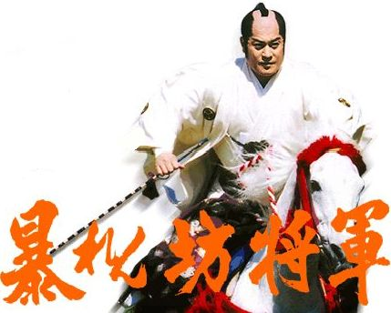
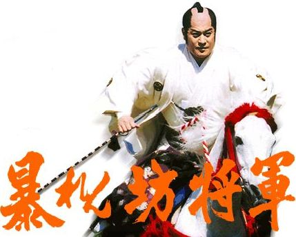

[已完結] 【DRYH+HR】【非官方酒吧團】金銀雙匙的幻境臨摹
| 凱琳 「傍観者」  初等部白緞生
| 601☆大中小簡繁發表於 8-17-2012 06:24 PM 只看該作者 |
| 凱琳 「傍観者」 初等部白緞生
| 601☆大中小簡繁發表於 8-17-2012 06:24 PM 只看該作者 引用:原文由 Edward_Knave 於 8-17-2012 02:12 AM 發表 一定會很好玩－－這可是亂殺場面啊嘿。 那還是別給了。 喂！ 青年伸手到褲袋，偷偷按下幾個熟悉的音階。 皮爾諾 (凱琳)的「瘋狂天賦【律死輓歌】目標金．斯柏德」 擲了「9 d 6 + 0」 ，擲出「6、4、1、6、1、5、5、4、6」，總合為「38」。 皮爾諾 (凱琳)的「（續）瘋狂天賦【律死輓歌】目標金．斯柏德」 擲了「4 d 6 + 0」 ，擲出「6、6、4、2」，總合為「18」。 －－ 【行動確認】、我不會說我非常想去打救贖戰的（別這樣 [ 凱琳 於 8-17-2012 07:14 PM 重新編輯過 ] |
Hazmole 新手輔導員
| 602☆大中小簡繁發表於 8-17-2012 09:06 PM 只看該作者  引用:倏然，在吉坦的面前只見一條殘影消散。 哈絲默爾 (Hazmole)的「閃避攻擊」 擲了「9 d 6 + 0」 ，擲出「4、3、3、5、3、2、1、1、4」，總合為「26」。 （印象中我有 ──不忘之名？哈哈，可聞那怪道之風？ 「諸君，奮起！」彷彿以己身成為肉盾，吸引住了敵人的注意力，哈絲默爾對著一旁的吉坦喊道── 不管有沒有閃過那可怕的刀鋒，哈絲默爾藏在懷中的右手握緊了迷幻藥，奮力朝著極近距離的哥不林老闆扔去── 【行動確認】 ＝＝＝＝ 每一次擲骰都好刺激啊啊啊啊  回聲望： →書記：3點，了解 →藍刺蝟：時間點的問題……話說還能改骰子嗎？ [ Hazmole 於 8-18-2012 10:09 AM 重新編輯過 ] |
北楼真茂 小學部藍綵生
| 603☆大中小簡繁發表於 8-17-2012 11:32 PM 只看該作者 引用:「哇！啊－－哈哈哈哈－－這種東西在客人口中聽過幾次，好像叫沙布甚麼來著？還真的想不到原來它真的如此厲害！哈－－哈哈哈哈－－」 引用:「諸君，奮起！」彷彿以己身成為肉盾，吸引住了敵人的注意力，哈絲默爾對著一旁的吉坦喊道。 吉坦手還沒摸到東西，但是那還在遠方看見自己的哥布林卻一下子消失無蹤，吉坦定眼一瞧，那哥布林居然已經在一瞬之間下到了一樓，而且還準備好了戰鬥姿勢，目標是那個身形異狀的狂信者哈斯默爾。 「嘖！有沒有什麼東西能幫上忙的……」吉坦搜了搜自己的袋子，拿出了一個東西，「啊對，這個！」 「看招！」吉坦便抓緊了手中的鐵酒瓶，拔開瓶蓋，直直的往哥布林丟去，企圖阻止哥布林的攻擊。 吉坦。戴斯 (北楼真茂)的「【聯骰：哈絲默爾迴避】」 擲了「2 d 6 + 0」 ，擲出「6、4」。 吉坦。戴斯 (北楼真茂)的「【補骰聯骰：哈絲默爾迴避】」 擲了「1 d 6 + 0」 ，擲出「2」。 ＜行動確認＞ ======================場外 聲望：補骰了～成功耶～  如果這個紀律獲勝的話可以恢復反應吧? [ 北楼真茂 於 8-18-2012 12:39 AM 重新編輯過 ] |
MADAO 小學部白緞生
| 604☆大中小簡繁發表於 8-18-2012 01:41 AM 只看該作者 「咦、咦！？這就開打了嗎！？我、我還沒有心理準備──」 奧茲見眾人乒乒乓乓地動上了手，一個箭步往旁退開，遠離爭亂的中心。 猶豫著： ──怎麼辦，該不該打？ ──打？老闆沒做什麼壞事啊。 ──不打？等他真的做什麼壞事就遲了啊。 ──打？不打？打？不打？ ──打不打？ 「喂喂喂，有話慢慢說，先別動手啊！」 奧茲突然拿出吉他：「總、總之先聽聽這曲子，冷靜一下吧！」(硬是要彈，亂拗) 接著拿起綠色惡魔造型的彈片，全力往琴弦上撥下── 奧茲‧梁 (MADAO)的「瘋狂天賦：The Pick of Destiny★★★」 擲了「9 d 6 + 0」 ，擲出「3、2、3、3、2、1、2、2、1」，總合為「19」。 (61.62.xx.xxx 2012/8/18 1:35:21 Taipei Time) 若成功...難度七星成功九顆沒有失敗要素吧XD 哥布林老闆受到曲子影響，陷入極度憂鬱的情緒，鬱悶欲死。 嚷嚷著：「啊啊──如果有下輩子我想成為一隻鯰魚──」 面對眾人攻擊放棄一切迴避行動，並且拿刀子往自己的大腿剁下。 -- 九顆成功骰！！？？ 奧茲的瘋狂天賦lv3是控制對方一個回合行動，這樣應該沒有問題齁？ 另外曲子是坂本龍一的Merry Christmas, Mr. Lawrence ，(戦場のメリークリスマス)，原曲為鋼琴曲，很好聽，推薦一下。 聲望： 這兩天不知道吃了什麼東西還是什麼玩意兒上身，人品大爆發。 連基礎團那邊也爆骰，超爽v(￣︶￣)y [ MADAO 於 8-18-2012 02:31 AM 重新編輯過 ] |
玄子 小學部黃綾生
| 605☆大中小簡繁發表於 8-18-2012 07:57 AM 只看該作者 玄子東張西望見身邊的人都打起來了，沒辦法靠近哥布林的他現在風刃也用不了……可惡。 「啊啊啊啊啊啊啊混帳不管了玄月那家伙卡文所以你給咱去死吧啊啊啊啊啊啊啊啊啊－－！」被腦內不斷漫延的碎碎念跟灰暗因子影響，忍耐力到極限幾近抓狂的妖怪隨手提起一張椅子，打算再故技重施。 引用:「喂喂喂，有話慢慢說，先別動手啊！」 玄子將椅子往哥布林身上扔去，現在的他可不管腦中那些雜亂的東西。 玄子 (玄子)的「扔椅子」 擲了「3 d 6 + 0」 ，擲出「4、5、3」，總合為「12」。 「一張不夠？」妖怪邪肆的笑容加深了點（腦內另一人的情緒到底將玄子影響到甚麼地步了……），鳧綠眸裡的狂氣隨著曲子的演奏顯得更盛。「來第二張啊。」 玄子 (玄子)的「扔椅子」 擲了「3 d 6 + 0」 ，擲出「6、5、4」，總合為「15」。 即使椅子不能擊中哥布林，亦會造成一定程度上的行動障礙－－一般人走路時總會避開椅子吧？ 【行動確認】 - 場外： 奧茲的超神骰！Q口QQ 對不起咱完全沒幫上忙Q口QQQQ咱是不是該祭骰神了Q口Q [ 玄子 於 8-18-2012 08:09 AM 重新編輯過 ] |
wesly 小學部白緞生
| 606☆大中小簡繁發表於 8-18-2012 10:30 AM 只看該作者 見到諸多的集中火力，紗姬立刻換成戰術長劍，伸出刀刃後從另一邊朝哥布林猛力刺去。 她相信這歌布林再怎麼擅長迴避，應該也沒辦法防禦到自己迅速地猛擊。 奈良原 紗姬 (wesly)的「使用「異能：軍方格鬥技：戰術長劍」攻擊金．斯柏德」 擲了「6 d 6 + 0」 ，擲出「2、2、4、4、5、3」，總合為「20」。 如果成功 長劍刺穿哥布林的左胸，幾秒之後紗姬拔出長劍，自哥布林胸口噴出的鮮血一部分濺灑到紗姬的臉上。 紗姬伸出舌頭舔了舔嘴巴附近的鮮血、露出恐懼到令人絕望的眼神盯著金‧斯柏徳看……。 「敗戰者的鮮血都是最美味的……不是嗎？」 「敗戰者的鮮血都是最美味的……不是嗎？」紗姬陰險的說道。 |
| Edward_Knave 以「書記」自稱者  初等部藍綵生
| 607☆大中小簡繁發表於 8-18-2012 05:39 PM 只看該作者 第二章 金銀雙匙的噩夢
【補充資料】孟斯特、吉坦所知 在哥布林出現在哈絲默爾面前的時候，孟斯特與吉坦發現了紙條上的數值改變。 免費內容:金．斯柏德：95.2% 引用:「嘿──爾也曾聞那褻瀆之名？」生死一瞬間仍不忘碎嘴，哈絲默爾帶著喜悅的心情，硬拖著疲憊的身軀向後避去── 引用:「什……！」吉坦手還沒摸到東西，但是那還在遠方看見自己的哥布林卻一下子消失無蹤，吉坦定眼一瞧，那哥布林居然已經在一瞬之間下到了一樓，而且還準備好了戰鬥姿勢，目標是那個身形異狀的狂信者哈斯默爾。 吉坦把酒瓶扔去，鐵瓶隨即在綠影跟前被打出一道線形的凹痕，並朝著吧檯的方向反彈，直接落在先前被紗姬砍開的破孔裡，撞出清脆的聲響。 哈絲默爾在看不見的刀法面前，顯現出瘋狂的淡定，避開了霧氣一樣的劍舞，並以迷幻藥瓶回敬。 藥瓶接觸殘影，隨即被刀身打走，飛到大門前，在透明的封條前憑空破裂，在遠處吐出一小團煙霧，隨即消散無蹤，賸下破碎的小藥瓶。 引用:然後只見紗姬收起長劍拿出DT機槍，從金．斯柏德的左邊瞄準以免打到哈茲默爾。臉上的奸險表情頓時顯示出她殺人無數、毫無人性的性格。 引用:孟斯特沒花時間去思考老闆到底看到多厲害的「沙布」。眼見一樓的紗姬拿起機槍攻擊－－「好吧！開打啦！」他吼一聲，接著抽出槍型打火機，指著老闆大聲吼道：「吃子彈吧！」語句中充滿了魄力，讓人難以忽視。 於是，老闆試圖針對孟斯特「即將射出的子彈」，迅速閃避。然而，他並看不見真正的槍彈其實將從另一方向射出。 出其不意，紗姬的槍彈打在哥布林老闆的身上，破出數朵血花。 機槍的彈幕平息，禮儀師隨即展開葬禮的預演。 引用:青年伸手到褲袋，偷偷按下幾個熟悉的音階。 然而，第二段還沒奏完，奧茲逕自開始演奏。在兩種音樂的交疊之下，禮儀師的死亡氣息似乎要被惡魔的邪念比下去了。 引用:「咦、咦！？這就開打了嗎！？我、我還沒有心理準備──」 引用:「哼嘿哼。」在奧茲大叔開始彈曲時妖怪總覺得有點不對勁……不管了反正是好機會！ 只見哥布林老闆停下腳步，四處亂砍，將玄子扔過去的兩張椅子砍成碎片。 然而，不消數秒，哥布林老闆隨即受到曲子影響，陷入極度憂鬱的情緒，鬱悶欲死。 「啊啊──如果有下輩子我想成為一隻鯰魚──」 低沉的嗓門加上憂鬱的言詞，兩者交織，雖是怪異的組合，卻是實在的事件。 他拿著刀子，隨即試圖往自己的大腿剁下。 孟斯特、吉坦所知 在哥布林舉刀之際，紙條上對應於金．斯柏德的數值先變成85.7%，卻變回95.2%。 免費內容:金．斯柏德：95.2% 「不中用的老頭，給老娘退後！」老闆娘一句怒吼，老闆隨即倒地。 喊出最後一字，只見一道球形的紫色脈衝從婦人之口噴出，橫掃酒吧全域。 ＜＜金．斯柏德下一回合的行動決定為「對自身物理攻擊」，直傷：5d2-5＞＞ ＜＜若操縱者wesly確認，奈良原紗姬下一回合的行動將決定為「迴避銀．斯柏德攻擊，然後對金．斯柏德發動任意攻擊(難度=7)」。在下一次回應前可以悔棋。＞＞
～～～～～～～～ 一樓平面圖(如有錯誤請提出更正) ┌───┬───┬──┬────┬───┬──┬───┬──┬─────────────┬─┬──┬────────────────┐ │╲ │ ╱│██│ │ │ │□□│◆ ◆ ◆ ◆ │ │██│ │ │ ╲ │ ╱ │██│ │ │ │□ └─────────────┘ │██│ ╭───╮ │ │ ╲│╱ │██├ ──┤ │ ├───┤□ │██│ ╭╭───╮╮ │ ├───█───┤██│ │ │ │□ ┌─────────────┐ │██│ ││╭─╮││ │ ├───┼───┤██│ │ │□ │ │ │██│ │││ │││ │ ├───┼───┤██│ │ │ │□ │ │ │██│ ││╰─╯││ │ ├───┼───┼──┼ ──┴───┘ └┬──┤□ └─────────────┘ └──┘ ╰╰───╯╯ │ ├───┼───┤┌┐│ │┌┐│□ │ ╰───╯ │ ├───┼───┤│││ ││││□ ┌─────────────┐ │ │ ├───┼───┤└┘│ │└┘│□□│◆ ◆ ◆ ◆ │ │ │ ├───┼───┴──┴───………………┬┬┬┼┬┬┼──┼───佈───告───欄─┼─┬──┴────── │ ├───┤ │││││││ └───────────────┘ │ │ │ │││││││ │ │ │ │││││││ │ │ █────────────────█┴┴┴┴┴█ Θ │ │ │ │ ╭─╮ │ │ ○ ○ │ │ ┌──┤ │ ╭───╮ │ │ │ │ │ │ │ α ○│ │ │ │ │ ○ ○ ○ ○ ○ ○ ╰───╯ ○ │ │ │ │ │ ╭───╮ ╭───╮ ╭───╮ γ ○│ │ │ │ │ │ │ │ │ ◇│ │ │ │ │ ╰───╯ ╰───╯ ╰───╯ │△│ ○│ │ 大 ○ ○ ○ ○ ○ ○ ○ ○ ○ ○ │◆│ │ │ ╭───╮ ╭───╮Φ ○ ζ ○│ │ │ │ 門 │ │ ☆ │ │ │⊙│ │ │ ╰───╯ ╰───╯ │ │ │ │ ○ ○ ○ ○ ○ ○ ○ ○ ○ │ │ │ │ │ ╭───╮ ╭───╮ ╭───╮ ○│ │ │ │ │ │ │ │ │ │ ◇│ δ │ │ │ │ │ ╰───╯ ╰───╯ ╰───╯ ○ ○η ○│ │ │ │ │ ○ ○ ○ ○ ╭───╮ ε │ │ │ │ │ │ │ ○│ │ │ │ │ ╰───╯ │ │ │ │ │ ○ ○│ │ │ │ │ │ │ │ │ │ ╭─┬─╮ ○│ │ │ │ │ █───────────────█┬┬┬┬┬█ │╲│╱│ ├─┤ │ │ │ │ │││││││ ├─┼─┤ ◎╭─╯ │ │ │ │ │ ○ │││││││ │╱│╲│ ╭─┤ │ │ │ ├───┤ │││││││ ╰─┴─╯╭┬╯█╰╮ │ │ │ ├───┼───┬──────── ┼┴┴┴┴┴┴─ ┬ ──────────────┬╯╰╮██│ │ │ │ ├───┼───┤□□□□ │□ │ │ │█╭╯ │ │ │ ├───┼───┤□□□□ │□ │ │ ╰─╯ │ │ │ ├───┼───┼──┐□ █ │□ █ │ ┌──┼────────┘ │ │ ├───┼───┤██│□ █ │□ █○█ │ │██│ │ │ ├───┼───┤██│□ █ │□ █ │ │██│ │ │ ├───┼───┤██│□ ○ ○│□ │ │██│ │ │ ├───█───┤██│□ │□ │ │██│ │ │ │ ╱│╲ │██│□ │ │ │██├─────────────┘ │ │ ╱ │ ╲ │██│□ │ │ │██│ │ │╱ │ ╲│██│□□□□□□□□│□□□□□□□□□□│ │██│ │ └───────┴──┴────────┴──────────┴──────────────┴──┴────────────────┘ α：皮爾諾 γ：玄子 δ：哈絲默爾 ε：奧茲．梁 ζ：奈良原紗姬 ◎：圖託理雅爾 ◇：鐵盒 ☆：收納器 Φ：金．斯柏德 Θ：銀．斯柏德 二樓平面圖(如有錯誤請提出更正) ┌───┬───┬─┬─────┬────┬───┬────┬───┬────┬───┬───┬─┬──┬──┬──────────┐ │╲ │ ╱│ │ │ ╲╱ │ │ ╲╱ │ │ ╲╱ │ │ │□│ │ │ │ │ ╲ │ ╱ │ │○ │ ╱╲ ├───┤ ╱╲ ├───┤ ╱╲ ├───┤ │□│ │ │ │ │ ╲│╱ │ │ └────┤ ○ └────┤ ○ └────┤ ○ └──┬┴─┤ │ │ │ ├───█───┼─┴┐ │ │ │ │██│ │ │ │ ├───┼───┤██├───┐ │ │ │ │██├ ┴ ┤ │ ├───┼───┤██│ │ ├──┐ ├──┐ │ │██│ │ │ ├───┼───┤██│ │ │ │ │ │ │ │██│ │ │ ├───┼───┤██│ │ │ │ │ │ │ ┌───┤██│ ┌──┤ │ ├───┼───┤██├───┤ ├──┤ ├──┤ │ │╲ ╱│██│ │ │ ├───┼───┤██│（□）│ │□□│ │□□│ │ │╱ ╲│██│ │ │ ├───┼───┴──┴───┴─── ┼┬┬┼┬┬┐ ┴──┴─── ┴ ┴───┴──┴ ├──┘ │ ├───┤ │││││││ │ │ │ │ │││││││ │ │ │ │ │││││││ │ │ │ █────────────────█┴┴┴┴┴█────────────────────────█ │ │ │ │ │ │ │ │ │ │ │ │ │ │ │ │ │ │ │ │ ２／Ｆ │ │ │ │ │ │ │ │ │ │ │ │ │ │ │ │ │ │ │ │ │ │ │ │ │ │ │ │ █───────────────█┬┬┬┬┬█───────────────█ │ │ │ η │││││││ │ │ │ │ │││││││ │ │ ├───┤ │││││││ │ │ ├───┼─β─┬──┬ ─────┼┴┴┴┴┴┼─┬──┬─────── ┴┬──┬──┐ │ ├───┼───┤██│ │＞＞╳＜＜│□│ │ │＞＜│██│ │ ├───┼───┤██│ ├─────┤□│ │ ├──┤██│ │ ├───┼───┤██│ │ ├─┼──┘ │╲╱│██├────┐ │ ├───┼───┤██│ │ │╳│ │╱╲│██│ │ │ ├───┼───┤██│ ┌─────┬ ──┼─┴────┐ ├──┤██│ │ │ ├───┼───┤██│ │ │ │ │ │＞＜│██│ ──┤ │ ├───█───┼─┬┘ │ │ │ │ ├──┴──┤ │ │ │ ╱│╲ │ │ │ │ │ │ ○ ○ ○ └─────┘ │ │ │ ╱ │ ╲ │ │○ ├─────┤ ├──────┼───────┐ │ │ │ │╱ │ ╲│ │ │（□╳□）│ │（□）（□）│ │ │ │ │ └───────┴─┴───┴─────┴─────┴──────┴───────┴─────────┴──┴───────────┘ β：孟斯特 η：吉坦．戴斯 場外發言：可惡－－！我弄錯了紅龍的名字……！(淚奔)(紅龍毆) 回應： Hazmole - 既然是頭目，總該有點強度吧？提示我下一個回合再給。  (第七十七帖：太阿倒持) [ Edward_Knave 於 8-20-2012 01:55 AM 重新編輯過 ] | ||||||||||||||||||||||||||||||||||||||||||||||||||||||||||||||||||||||||||||||||||||||||||||||||||||||||||||||||||||||||||||||||||||||||
| wesly 小學部白緞生
| 608☆大中小簡繁發表於 8-18-2012 08:33 PM 只看該作者 引用:原文由 Edward_Knave 於 8-18-2012 05:39 PM 發表 她了解到有這賤人在，近戰就對那隻歌布林不管用，於是她又切換回機槍，朝著金‧斯柏德灑下密不透風的彈幕。 奈良原 紗姬 (wesly)的「迴避銀‧斯柏德的攻擊」 擲了「3 d 6 + 0」 ，擲出「2、3、2」，總合為「7」。 奈良原 紗姬 (wesly)的「使用「異能：武器射擊：DT機槍」攻擊金．斯柏德」 擲了「6 d 6 + 0」 ，擲出「3、6、5、4、1、6」，總合為「25」。 |
| MADAO 小學部白緞生
| 609☆大中小簡繁發表於 8-19-2012 04:05 AM 只看該作者 「咦、咦！？怎、怎麼了？不喜歡這首曲子？我、我換一首就是了，先、先不要衝動！」 見老闆娘猝起發難，猜想顯然是對自己的琴藝不甚滿意，奧茲狼狽得東逃西竄，慌忙間同時命運彈片再撥，吉他變奏，換了另外一首曲子。 然而，話是衝著老闆娘講的，攻擊的對象卻依然還是老闆。 「喜、喜歡熱鬧一點的歌是嗎？」 奧茲‧梁 (MADAO)的「瘋狂天賦：The Pick of Destiny★★★」 擲了「9 d 6 + 0」 ，擲出「5、1、4、3、2、6、4、6、3」，總合為「34」。 (61.64.xxx.xxx 2012/8/19 3:29:30 Taipei Time) 若成功 老闆聽了這曲，深藏心中數十年對老闆娘的滿腔愛意突然爆發，雙目含淚，丟下手中武器，奮不顧身衝向老闆娘將她抱緊……不，應該說是死命箍住比較洽當。 嚷嚷著：「老婆！我就是生來愛你的，我不能沒有你啊啊啊啊！！！」 (總之老闆這回合行動依舊是面對攻擊放棄一切迴避動作，然後「全力」將老闆娘抱在懷裡。 當然啦，老闆的動作是抓，抓不抓得到老闆娘是另外一回事，這就留給GM擲骰決定) -- 啊啊啊啊~~~痛苦骰千萬要有6有5、痛苦骰千萬要有6有5、痛苦骰千萬要有6有5…… 成功骰數也很微妙，果然沒有每天在過年的OTZ||| ……皮爾諾要來個連骰二重奏嗎XDDD 另外我想問一下大家，現階段行動要集火在老闆身上嗎？還是老闆娘？還是要調配人力？還是就亂打？ 既然設定是戰士和法師，我猜老闆的HP應該比SAN高，而老闆娘的血會薄一點，團員物理攻擊系多的話，優先打擊法師應該是個比較洽當的選擇。可是上一回合整個忘記老闆娘的存在，結果...OTZ [ MADAO 於 8-19-2012 04:11 AM 重新編輯過 ] |
| 藍刺蝟 掛機刺蝟娘  新手輔導員
| 610☆大中小簡繁發表於 8-19-2012 12:08 PM 只看該作者 引用 引用:在哥布林出現在哈絲默爾面前的時候，孟斯特與吉坦發現了紙條上的數值改變。 嘖！又是複雜的情況…… 孟斯特對目前的局面做了點推測－－他認為，皮爾諾和奧茲的音樂理或許藏著些超能力，能讓敵人做出瘋狂的舉動；而哈絲默爾的禱告詞大概也有類似效果。但紙條數值的變化……還是無法確定是什麼造成的。 既然如此－－ 眼見紗姬匆忙的逃上樓躲避老闆娘的紫色脈衝波，孟斯特選擇往下迴避－－他側身掠過紗姬的動線，三步併作兩步下了樓梯，並試圖避開途中的紫色波動－－ 判定： 孟斯特 (藍刺蝟)的「【三紀律二耗竭】迴避」 擲了「5 d 6 + 0」 ，擲出「2、6、2、3、4」，總合為「17」。 (112.104.xxx.xx 2012/8/19 11:53:16 Taipei Time) 著陸！ 來到一樓，偵探捧著酒杯，朝老闆的方向望了一眼－－紗姬的子彈如雨點般繼續朝他打去！ 先解決掉一個吧－－但之前的計策不能再用了…… 突然，他心生一計－－大膽又危險、幾乎是賭命的計策－－ 他扔出手中的酒杯－－朝著金．帕斯德，酒水散成點點碎珠，潑灑在他身上、浸潤著－－ 在子彈的高熱衝擊下，酒精會起什麼化學反應呢？ 我一定是瘋了。 孟斯特揚起一枚微笑。 混亂－－有時，反是真相潛伏之處。 【行動確認】 －－－－－－場外線 燒起來吧XDD （不知單純潑酒要不要擲骰－－要的話告訴我 如果下回合，奧茲的音樂湊效，老闆就會慾火焚身地擁抱老婆了XDD 吉坦的操火也能用了 回聲望：我想，吉坦上回合就想要點火了XD 再回聲望：潑出去的嚴格來講是酒精和水的混合物。與水混合的情況下，酒精的燃點反而會下降，在攝氏100度以內。 我不知道子彈溫度多少，但總不會低於100度吧？？ 打火機，這要花一回合要求了XD 如果吉坦問孟斯特關於手槍的事，他或許會展示給吉坦看，這時就可以藉機發動操火。 [ 藍刺蝟 於 8-19-2012 03:43 PM 重新編輯過 ] |
| 北楼真茂 小學部藍綵生
| 611☆大中小簡繁發表於 8-19-2012 02:49 PM 只看該作者 引用:「啊啊──如果有下輩子我想成為一隻鯰魚──」 「！」 吉坦看到迎面而來的一陣紫光，周圍的時光似乎緩慢了下來，腦袋裡頭湧上了一種感覺，那跟在對付魚頭女的時候有點類似。那時，吉坦覺得那是憤怒，但現在他知道了那種感覺叫什麼了，恐懼。 那份恐懼，便是吉坦對外在的反骨。 「啊啊啊啊！」 手中爆出了熱炎的吉坦，握緊了手中的炙熱，似乎用盡了全身的力氣，一拳瞄準直線上的脈衝與金．斯柏德。 吉坦。戴斯 (北楼真茂)的「【瘋狂天賦：操火(6)】+【習得異能：近身搏擊(2)】+【鐵指虎】」 擲了「12 d 6 + 0」 ，擲出「4、1、4、4、6、2、5、6、1、1、2、5」。 ====================場外 骰網的第一個打錯了(我要骰3星就直接打3了)，然後一次只能骰9顆所以多補骰了3顆。 全力一擊的成功率有點低啊...微妙的骰數  [ 北楼真茂 於 8-19-2012 02:51 PM 重新編輯過 ] |
| 凱琳 「傍観者」 初等部白緞生
| 612☆大中小簡繁發表於 8-19-2012 05:41 PM 只看該作者 引用:原文由 Edward_Knave 於 8-18-2012 05:39 PM 發表 青年沒來得及吐糟或者扶額就已經躲到玄子身後的桌子下，希望借桌子（和玄子）擋一擋。 皮爾諾 (凱琳)的「迴避」 擲了「9 d 6 + 0」 ，擲出「6、5、1、6、1、3、4、2、2」，總合為「30」。 同時，青年也乾脆把手風琴整個拿出來，略一思索後按起了對現狀恐怕不太配合的音調。 皮爾諾 (凱琳)的「瘋狂天賦【輓歌】（目標金．斯柏德）」 擲了「9 d 6 + 0」 ，擲出「5、3、4、3、4、4、4、6、6」，總合為「39」。 皮爾諾 (凱琳)的「瘋狂天賦【輓歌】（目標金．斯柏德）」 擲了「6 d 6 + 0」 ，擲出「5、3、3、4、6、4」，總合為「25」。 －－ 一點平面圖發現我附近神空虛（驚恐）想說找個牆躲躲都不行啊！ＯＡＯ …骰網你嬴了！3456都有這是哪招！15骰4啊喂不科學！（拍桌 |
| Hazmole 新手輔導員
| 613☆大中小簡繁發表於 8-19-2012 11:15 PM 只看該作者 引用:「啊啊──如果有下輩子我想成為一隻鯰魚──」 →３點修正值：１、１、６、３、３、３、２、１、２ 「嘿嘿──龍吟虎嘯？不知那愚目的穢人也會這衝擊之光？」眼見那擴散的紫色脈衝如同腐蝕般蔓延，哈絲默爾再次拖著疲憊的身軀，試圖從脈衝未能及之境跳入敵人的領域，同時右手持著那危險的的藥劑水──「迷幻藥ＬＶ３」，往那可敬、可怕、可畏、可笑的的敵人，哥布林老闆娘扔去── 「哈哈哈哈、何不一應那萬能的饗宴！？」 ──吞噬靈魂、迷失自我的迷幻藥劑。 帶著惡意的殺念，那一撞即碎的兩個小瓶氣勢洶洶的潮著目標飛去。 ＝＝＝＝ 我又對反擊擲骰懵懂了……要是我想邊跳開邊用邪神召喚反擊的話，是要怎麼擲啊？ 然後現在邊跳開邊丟藥劑，我還需要擲一次骰嗎？ 回聲望： 了解，嘛，那就先丟迷幻藥吧。 [ Hazmole 於 8-19-2012 11:21 PM 重新編輯過 ] |
| 玄子 小學部黃綾生
| 614☆大中小簡繁發表於 8-20-2012 07:03 AM 只看該作者 引用:琴弦一撥，惡魔的暗示再現。這是僅屬於金．斯柏德的咒罵。 引用:我都忘記還有她了…… 妖怪僵住，皮爾諾在身後不好閃避，他沒來得及想便只好跟他一樣躲進桌子裡(皮爾諾前方)。 玄子 (玄子)的「迴避攻擊」 擲了「4 d 6 + 0」 ，擲出「6、2、5、1」，總合為「14」。 待脈衝停止後，玄子鬆一口氣這才從桌底走出來。看著眾人各自的行動跟目標，他想了想還是沒去攻擊老闆。 在哈絲默爾扔出兩不知名的瓶子（玄子完全不願意去想那到底是甚麼）後，妖怪便抄起骨爪，帶著唇畔狂肆的笑意往老闆娘的方向襲去。 －－快點打完快點讓咱喝麥精！餓死了！ 玄子 (玄子)的「攻擊（目標：銀‧斯柏德」 擲了「7 d 6 + 0」 ，擲出「5、5、1、6、2、6、6」，總合為「31」。 - 場外： 期待等會兒的火w |
| Edward_Knave 以「書記」自稱者 初等部藍綵生
| 615☆大中小簡繁發表於 8-20-2012 10:37 PM 只看該作者 第二章 金銀雙匙的噩夢
金．斯柏德依舊俯臥在地，一潭血泊無聲無息的流出大腿。 同一時間，紫色的球形脈衝逐漸橫掃。 皮爾諾與玄子在較近的距離之下首當其衝，尤以前方的玄子更承受了大部分的傷害，劇痛難當。 哈絲默爾將最近的椅子踢倒並向前推往老闆娘的所在，以其僅餘的面積作為掩護，擋去了紫色的波動，在繞射之前成功乘著虛縫作出反擊。 紗姬在走避的時候找不到虛縫，遂被脈衝打中，一陣電擊隨即在陸行腳裡橫行。 同時，孟斯特與紗姬相遇之際，孟斯特剛剛找到了由紗姬爭取的機會，避開了波動的入侵。 另一方面的吉坦則在爆發出火焰，化作火人的時候使得面前的波動扭曲，並將之衝散。 第一波攻勢：紗姬 引用:紗姬立刻放下履帶，以最快的速度躲避到二樓，迴避銀‧斯柏德的攻擊。 紗姬的槍彈在接觸紫色的波動之時倏然偏轉，所有的子彈都打在身旁的地板，留下了密密麻麻的彈孔。 第二波攻勢：孟斯特與吉坦 引用:孟斯特對目前的局面做了點推測－－他認為，皮爾諾和奧茲的音樂理或許藏著些超能力，能讓敵人做出瘋狂的舉動；而哈絲默爾的禱告詞大概也有類似效果。但紙條數值的變化……還是無法確定是什麼造成的。 引用:吉坦看到奧茲的攻擊奏效，哥布林老闆外表上看來已經停下動作，於是吉坦便往後退了一步，直接從二樓的走廊上往下一躍，目標正是停止動作的哥布林老闆。但就正在吉坦躍出二樓的欄杆，一個女性的聲音傳來，隨即而來的是一陣紫色的衝擊波，從吉坦的面前傳來。 紗姬的子彈被紫色的脈衝擋開，孟斯特所打碎的酒杯與飛濺的白蘭地並沒有被子彈的高溫表面點燃。在少於千分之一秒的時間之內，子彈要燃起地上的烈酒確實不是必然。 然而，吉坦就在這時帶來了實在的火種。 吉坦化身火人，在哥布林掌櫃身上不留情面的打，即使他試圖負傷走避，卻仍無法避開所有的攻擊，雖然在老闆身上沾到的酒燒了幾秒就沒了，但是吉坦的攻擊已經足以對他構成傷害。 剛才的衝擊已經為老闆的敏捷打了折扣。 第三波攻勢：玄子與哈絲默爾 引用:「嘿嘿──龍吟虎嘯？不知那愚目的穢人也會這衝擊之光？」眼見那擴散的紫色脈衝如同腐蝕般蔓延，哈絲默爾再次拖著疲憊的身軀，試圖從脈衝未能及之境跳入敵人的領域，同時右手持著那危險的的藥劑水──「迷幻藥ＬＶ３」，往那可敬、可怕、可畏、可笑的的敵人，哥布林老闆娘扔去── 引用:「這這這……！」 話分兩頭，老闆娘看見飛往自己的藥瓶，輕鬆的伸手一擋，藥瓶在她面前的地上摔破，放出陌生的煙霧，霧氣隨即染在銀．斯柏德的身上。 「這位客人，這樣子亂扔垃圾可不行喔。」 老闆娘站在煙霧之中，以愛嬌的聲線告誡哈絲默爾，隨即跪下，撿起藥瓶的碎片，將之扔出。在這一刻，她似乎忽略了迷幻藥的效力。 就在這時，玄子被朝著自己扔過來的藥瓶怔住了，隨即反應過來，用骨爪將碎片擋開。 雖然沒有身受其害，玄子的來勢已經被化解了一部分，在迷幻的煙霧之中，玄子沒辦法集中精神攻擊老闆娘，結果就是一陣空揮，以及一股惱羞成怒的衝動。 ＜＜玄子面臨反應消耗。＞＞ ＜＜若選擇使用戰鬥反應：玄子將會以骨爪破壞任意一張桌椅。＞＞ ＜＜若選擇使用逃跑反應：玄子將會嘗試避開迷幻劑的影響，並與老闆娘保持距離，數秒後回復冷靜。＞＞ 第四波攻勢：皮爾諾與奧茲 引用:青年沒來得及吐糟或者扶額就已經躲到玄子身後的桌子下，希望借桌子（和玄子）擋一擋。 引用:「咦、咦！？怎、怎麼了？不喜歡這首曲子？我、我換一首就是了，先、先不要衝動！」 在哈絲默爾投藥過後，皮爾諾與奧茲再度同時奏樂。禮儀師的鎮魂曲帶來了安逸，音樂家的激情之歌帶來了愛。 然而，過度安逸喚醒了皮爾諾體內的疲憊，鎮魂曲在冷對死亡的皮爾諾面前成了催眠曲。 於是，皮爾諾倒在桌子下呼呼大睡，鎮魂曲戛然而止。同一時間，另一首歌曲隨即成為了聽覺上的焦點。 老闆聽了這曲，深藏心中數十年對老闆娘的滿腔愛意突然爆發，雙目含淚，丟下手中武器，奮不顧身衝向老闆娘將她抱緊……不，應該說是死命箍住比較洽當。 「老婆！我就是生來愛你的，我不能沒有你啊啊啊啊！！！」 金．斯柏德一邊嚷著，一邊纏住妻子之身。 銀．斯柏德的臉上隱約透出困窘，剛才的咆哮似乎已經消耗了她不少的力量，現在她暫時貌似無法掙脫。 「皮爾諾！醒醒！現在不是睡覺的時候啊！」玄子在桌底放下的黑色人偶搖著皮爾諾的身體。 「……好吧。現在就試試看透過虛擬夢境協助一下試驗者吧。」在壁爐前的圖託理雅爾聽見人偶的呼喚，隨即輕聲唸道，並伸出雙手緊按太陽穴，出神的盯著皮爾諾的方向。 孟斯特、吉坦所知 奧茲奏樂之時，哥布林夫婦擁抱之際，紙條上對應於金．斯柏德的數值變成92.9%後再變回95.2%。 免費內容:金．斯柏德：95.2% ＜＜金．斯柏德下一回合的行動決定為「阻止銀．斯柏德的行動」＞＞
昏睡者：皮爾諾之夢 皮爾諾再度閉上眼簾，發現自己身在一個純白的六邊形斗室，每一面俱光滑如鏡，雖然看不見任何門窗，卻沒有教人窒息之感。 其中一半被拉長的六角柱狀空間使得皮爾諾聯想到棺材的內部。 在牆上，他看見了牆上各有一行偌大的金字與銀字。 φ = (1+√5)/2 δAg = √2 ～～～～～～～～ 一樓平面圖(如有錯誤請提出更正) ┌───┬───┬──┬────┬───┬──┬───┬──┬─────────────┬─┬──┬────────────────┐ │╲ │ ╱│██│ │ │ │□□│◆ ◆ ◆ ◆ │ │██│ │ │ ╲ │ ╱ │██│ │ │ │□ └─────────────┘ │██│ ╭───╮ │ │ ╲│╱ │██├ ──┤ │ ├───┤□ │██│ ╭╭───╮╮ │ ├───█───┤██│ │ │ │□ ┌─────────────┐ │██│ ││╭─╮││ │ ├───┼───┤██│ │ │□ │ │ │██│ │││ │││ │ ├───┼───┤██│ │ │ │□ │ │ │██│ ││╰─╯││ │ ├───┼───┼──┼ ──┴───┘ └┬──┤□ └─────────────┘ └──┘ ╰╰───╯╯ │ ├───┼───┤┌┐│ │┌┐│□ │ ╰───╯ │ ├───┼───┤│││ ││││□ ┌─────────────┐ │ │ ├───┼───┤└┘│ │└┘│□□│◆ ◆ ◆ ◆ │ │ │ ├───┼───┴──┴───………………┬┬┬┼┬┬┼──┼───佈───告───欄─┼─┬──┴────── │ ├───┤ │││││││ └───────────────┘ │ │ │ │││││││ │ │ │ │││││││ │ │ █────────────────█┴┴┴┴┴█ Θ │ │ γ │ │ ╭─╮ │ │ ○ ○ │ │ ┌──┤ │ ╭───╮ │ │ │ │ │ │ α│ ○│ │ │ │ │ ○ ○ ○ ○ ○ ○ ╰───╯ ○ │ │ │ │ │ ╭───╮ ╭───╮ ╭───╮ ○│ │ │ │ │ │ │ │ │ ◇│ │ │ │ │ ╰───╯ ╰───╯ ╰───╯ η │△│ ○│ │ 大 ○ ○ ○ ○ ○ ○ ○ ○ ○ ○ │◆│ │ │ ╭───╮ ╭───╮Φ ○ ○│ │ │ │ 門 │ │ ☆ │ │ │⊙│ │ │ ╰───╯ ╰───╯ δ │ │ │ │ ○ ○ ○ ○ ○ ○ ○ ○ ○ │ │ │ │ │ ╭───╮ ╭───╮ ╭───╮β ○│ │ │ │ │ │ │ │ │ │ ◇│ │ │ │ │ │ ╰───╯ ╰───╯ ╰───╯ ○ ○ ○│ │ │ │ │ ○ ○ ○ ○ ╭───╮ ε │ │ │ │ │ │ │ ○│ │ │ │ │ ╰───╯ │ │ │ │ │ ○ ○│ │ │ │ │ │ │ │ │ │ ╭─┬─╮ ○│ │ │ │ │ █───────────────█┬┬┬┬┬█ │╲│╱│ ├─┤ │ │ │ │ │││││││ ├─┼─┤ ◎╭─╯ │ │ │ │ │ ○ │││││││ │╱│╲│ ╭─┤ │ │ │ ├───┤ │││││││ ╰─┴─╯╭┬╯█╰╮ │ │ │ ├───┼───┬──────── ┼┴┴┴┴┴┴─ ┬ ──────────────┬╯╰╮██│ │ │ │ ├───┼───┤□□□□ │□ │ │ │█╭╯ │ │ │ ├───┼───┤□□□□ │□ │ │ ╰─╯ │ │ │ ├───┼───┼──┐□ █ │□ █ │ ┌──┼────────┘ │ │ ├───┼───┤██│□ █ │□ █○█ │ │██│ │ │ ├───┼───┤██│□ █ │□ █ │ │██│ │ │ ├───┼───┤██│□ ○ ○│□ │ │██│ │ │ ├───█───┤██│□ │□ │ │██│ │ │ │ ╱│╲ │██│□ │ │ │██├─────────────┘ │ │ ╱ │ ╲ │██│□ │ │ │██│ │ │╱ │ ╲│██│□□□□□□□□│□□□□□□□□□□│ │██│ │ └───────┴──┴────────┴──────────┴──────────────┴──┴────────────────┘ α：皮爾諾 β：孟斯特 γ：玄子 δ：哈絲默爾 ε：奧茲．梁 η：吉坦．戴斯 ◎：圖託理雅爾 ◇：鐵盒 ☆：收納器 Φ：金．斯柏德 Θ：銀．斯柏德 二樓平面圖(如有錯誤請提出更正) ┌───┬───┬─┬─────┬────┬───┬────┬───┬────┬───┬───┬─┬──┬──┬──────────┐ │╲ │ ╱│ │ │ ╲╱ │ │ ╲╱ │ │ ╲╱ │ │ │□│ │ │ │ │ ╲ │ ╱ │ │○ │ ╱╲ ├───┤ ╱╲ ├───┤ ╱╲ ├───┤ │□│ │ │ │ │ ╲│╱ │ │ └────┤ ○ └────┤ ○ └────┤ ○ └──┬┴─┤ │ │ │ ├───█───┼─┴┐ │ │ │ │██│ │ │ │ ├───┼───┤██├───┐ │ │ │ │██├ ┴ ┤ │ ├───┼───┤██│ │ ├──┐ ├──┐ │ │██│ │ │ ├───┼───┤██│ │ │ │ │ │ │ │██│ │ │ ├───┼───┤██│ │ │ │ │ │ │ ┌───┤██│ ┌──┤ │ ├───┼───┤██├───┤ ├──┤ ├──┤ │ │╲ ╱│██│ │ │ ├───┼───┤██│（□）│ │□□│ │□□│ │ │╱ ╲│██│ │ │ ├───┼───┴──┴───┴─── ┼┬┬┼┬┬┐ ┴──┴─── ┴ ┴───┴──┴ ├──┘ │ ├───┤ │││││││ │ │ │ │ │││││││ │ │ │ │ │││││││ │ │ │ █────────────────█┴┴┴┴┴█────────────────────────█ │ │ │ │ │ │ │ │ │ │ │ │ │ │ │ │ │ │ │ │ ２／Ｆ │ │ │ │ │ │ │ │ │ │ │ │ │ │ │ │ │ │ │ │ │ │ │ │ │ │ │ │ █───────────────█┬┬┬┬┬█───────────────█ │ │ │ │││││││ ζ │ │ │ │ │││││││ │ │ ├───┤ │││││││ │ │ ├───┼───┬──┬ ─────┼┴┴┴┴┴┼─┬──┬─────── ┴┬──┬──┐ │ ├───┼───┤██│ │＞＞╳＜＜│□│ │ │＞＜│██│ │ ├───┼───┤██│ ├─────┤□│ │ ├──┤██│ │ ├───┼───┤██│ │ ├─┼──┘ │╲╱│██├────┐ │ ├───┼───┤██│ │ │╳│ │╱╲│██│ │ │ ├───┼───┤██│ ┌─────┬ ──┼─┴────┐ ├──┤██│ │ │ ├───┼───┤██│ │ │ │ │ │＞＜│██│ ──┤ │ ├───█───┼─┬┘ │ │ │ │ ├──┴──┤ │ │ │ ╱│╲ │ │ │ │ │ │ ○ ○ ○ └─────┘ │ │ │ ╱ │ ╲ │ │○ ├─────┤ ├──────┼───────┐ │ │ │ │╱ │ ╲│ │ │（□╳□）│ │（□）（□）│ │ │ │ │ └───────┴─┴───┴─────┴─────┴──────┴───────┴─────────┴──┴───────────┘ ζ：奈良原紗姬 場外發言：結果，比自己昨晚提出的時間遲了十二小時。抱歉。(跪) (第七十八帖：熾熱的愛) [ Edward_Knave 於 8-23-2012 12:09 AM 重新編輯過 ] | ||||||||||||||||||||||||||||||||||||||||||||||||||||||||||||||||||||||||||||||||||||||||||||||||||||||||||||||||||||||||||||||||||||||||||||
| wesly 小學部白緞生
| 616☆大中小簡繁發表於 8-21-2012 12:06 AM 只看該作者 引用:原文由 Edward_Knave 於 8-20-2012 10:37 PM 發表 引用:原文由 Edward_Knave 於 8-20-2012 10:37 PM 發表 紗姬驚覺不對勁，立刻衝到他身旁將他拉出來查看……果然沒猜錯，皮爾諾睡著了！ 「喂，現在是睡覺的時候嗎？醒醒啊……喂！小鬼，快醒醒……醒醒呀，該起床啦！給我醒來，喂？！」 她猛力的搖著皮爾諾，不時的呼他巴掌與大聲喊叫好讓他醒來，不過看來一點用處也沒有。 紗姬沒辦法，只好拿出她的圍巾(見角色圖)纏繞住皮爾諾的手腕，最後緊緊地打上了一個結，並對著黑色人影說。 「照顧他……有事情就叫我！」紗姬揮手示意後，拿出戰車砲裝填高溫白磷彈之後對著兩人，露出陰險殘酷的眼神說道。 「用炙熱加溫愛情，炮口將是你此生最後看到的風景……。」 「用炙熱加溫愛情，炮口將是你此生最後看到的風景……。」隨後，紗姬壓下板機，白磷砲彈快速射出朝著金‧斯博德飛去。 奈良原 紗姬 (wesly)的「使用『異能：武器射擊』：戰車砲(高溫白磷彈裝填)」攻擊金．斯柏德」 擲了「6 d 6 + 0」 ，擲出「2、6、3、4、4、5」，總合為「24」 如果成功 「嗚哇啊啊啊啊啊~~！」老闆高聲慘叫著，隨後在白磷燃燒身體的痛楚下化為焦屍……銀‧斯博德則是全身嚴重燒傷，無法動彈。 [ wesly 於 8-21-2012 10:57 AM 重新編輯過 ] |
| 凱琳 「傍観者」 初等部白緞生
| 617☆大中小簡繁發表於 8-21-2012 08:02 AM 只看該作者 不行，果然有些超過了…… 於是、某人很不負責任地、在桌下睡著了。（你還好意思說） 夢境藏一下 引用:原文由 Edward_Knave 於 8-20-2012 10:37 PM 發表 「還真是…終於也輪到自己的葬禮了？不過生葬可不符合我（禮儀師）的美學啊。－－如果說是安全棺材呢？總會有鈴鐺之類的讓我拉拉吧？」 青年站起來打量著六邊形斗室（為什麼又是純白的，青年心裡吐糟），沒多久便看見牆上的字。 沉默。 「……如果要解決這兩行字才能醒來的話我寧願繼續呆在這裡了。」苦笑。 －－ 【行動確認】 信我，我第一次點開夢境時兩秒關掉了。  另外書記，「再度閉上眼簾」是什麼意思wwwww [ 凱琳 於 8-21-2012 11:21 AM 重新編輯過 ] |
| 玄子 小學部黃綾生
| 618☆大中小簡繁發表於 8-21-2012 10:02 AM 只看該作者 煙霧彌漫之中視力完全失去了作用，妖怪意識到哈茲的藥瓶似乎不是甚麼簡單的東西。另一方面這迷幻的霧氣也讓他一陣起慄－－敵人在暗處的自覺讓他不得不邊警戒邊試圖攻擊，骨爪沒有碰到實物的撕碎感讓妖怪更為焦躁，集中力也隨煙霧的吸入而更為渙散……。 「可惡可惡可惡可惡－－！」 又是一爪空揮，強烈的挫敗感與惱怒自心底泛溢而滿。血液脈動帶起波波劇痛使妖怪揮爪的手都軟了下來。 將戰意取而代之的是，生存本能驅使的逃亡衝動，對未知敵襲的恐懼在煙霧之中被無限倍放大、增益。在這一片濃煙之中施爪的意志與氣力皆從四肢百骸絲絲流失，怔在原地的妖怪腦中不合時宜的記憶碎片此時逆流－－ 『……Mirky沒有霧，只有長年不斷的雨－－』 現在不是想這些的時候！步步後退的玄子用力搖頭，骨爪不知何時已轉回雙手。手心一片濕潤粘稠，妖怪再也無法按捺逃亡衝動以及洶湧襲來的恐懼波濤，一百八十度轉身全力跑出濃煙覆蓋之處。 「呼、呼……啊……」心跳聲此刻震耳欲聾，被恐懼操縱的窒息感驀然一鬆。玄子急切地來回揮動雙手以確定風的存在，盛大鼓譟的血液脈動之聲與記憶裡的風聲，隨著懼意主導的沉沉節奏，相互摻雜、重疊起來。 引用:在哈絲默爾投藥過後，皮爾諾與奧茲再度同時奏樂。禮儀師的鎮魂曲帶來了安逸，音樂家的激情之歌帶來了愛。 引用:「照顧他……有事情就叫我！」紗姬揮手示意後，拿出戰車砲裝填高溫白磷彈之後對著兩人，露出陰險殘酷的眼神說道。 那女軍官似乎是準備開火的樣子……玄子觀察了一會，決定在子彈命中後讓風進行攻擊。 他仍不知道女軍官所用的是白磷彈，一種碰到物體時會不斷燃燒的武器。他的風可能使火勢更為旺盛的同時，亦可能會將產生的煙霧盡數吹往哥布林夫婦所在的方向，使隊員免受煙霧所擾。 玄子 (玄子)的「聯骰」 擲了「3 d 6 + 0」 ，擲出「5、5、5」，總合為「15」。 【消耗逃跑反應‧行動確定】 - 場外： 老鼠之神在上咱完全沒發現異能值又滿了  查過資料……「白磷燃燒彈即應用此性質，是非常厲害的燃燒彈，沾到皮膚上的話很難及時去除，燃燒溫度又高，可以一直燒到骨頭，同時產生的煙霧對眼鼻刺激極大。」所以才想到要這樣做XD 咱該骰聯骰還是異能？XD因為不知道所以先放著XDD 皮皮皮爾諾的夢中竟然是公式到底XDDDDDDDDDDDD (滾地笑翻 回聲望： >>凱琳 突然很想知道正常情況下皮爾諾的夢境會是……？www >>青年 哦哦原來// (擲骰)(望骰數) 咱恨DYRH系統…… [ 玄子 於 8-21-2012 04:12 PM 重新編輯過 ] |
| 北楼真茂 小學部藍綵生
| 619☆大中小簡繁發表於 8-21-2012 02:13 PM 只看該作者 引用:「老婆！我就是生來愛你的，我不能沒有你啊啊啊啊！！！」 確實的攻擊到老闆的吉坦，落在離哥布林老闆不遠的一旁，深呼吸了一口氣，重新站起，拍了拍還殘留在身上延燒的小火焰，便在一秒之內馬上重整態勢，做好備戰姿勢。吉坦感覺從腹中延燒出來滿滿的火焰，漸漸讓他沒辦法把自己的拳頭克制住，就算那股恐懼已經不再繼續掌握他的神經，但平時看到火就會害怕的他，這時卻不管怎的腦袋裡頭只有一個想法。 打他！ 不到兩秒，吉坦便追到了哥布林老闆身後，直接又塞了兩個拳頭進去。 吉坦。戴斯 (北楼真茂)的「【習得異能：近身搏擊】+【鐵指虎】」 擲了「6 d 6 + 0」 ，擲出「1、5、2、6、6、3」。 吉坦。戴斯 (北楼真茂)的「【習得異能：近身搏擊】+【鐵指虎】」 擲了「6 d 6 + 0」 ，擲出「4、1、5、4、6、3」。 ==============場外 第一個我忘了算耗竭進去骰錯了(遮臉  老闆沒有燒起來嗎?030 [ 北楼真茂 於 8-21-2012 02:14 PM 重新編輯過 ] |
| Hazmole 新手輔導員
| 620☆大中小簡繁發表於 8-21-2012 03:07 PM 只看該作者 引用:老闆聽了這曲，深藏心中數十年對老闆娘的滿腔愛意突然爆發，雙目含淚，丟下手中武器，奮不顧身衝向老闆娘將她抱緊……不，應該說是死命箍住比較洽當。 引用:在哈絲默爾投藥過後，皮爾諾與奧茲再度同時奏樂。禮儀師的鎮魂曲帶來了安逸，音樂家的激情之歌帶來了愛。 「■■■■■■■──■■■！■■■■■■■■■■■■■■■■■■，■■■■■■■■■──」張嘴吐出的怪音，已經無法被辨識，不同於以往的頌辭，在這串語句中除了許願的急迫外，沒有一絲一毫該有的敬重與虔誠── 哈絲默爾 (Hazmole)的「【邪神的召喚（６顆骰）】」 擲了「9 d 6 + 0」 ，擲出「1、5、6、3、5、3、1、3、3」，總合為「30」。 哈絲默爾 (Hazmole)的「【邪神的召喚（６顆骰）】續」 擲了「6 d 6 + 0」 ，擲出「3、3、6、5、2、5」，總合為「24」。 若成功的場合 「與我定下契約，成為魔法阿嘛吧！」渾身雪白，口吐人言，長相可愛中帶著嚴重的不和諧，不貓不兔的怪異生物以極近的距離出現在哥布林老闆娘的面前，帶著人類所謂惡意的邪神之貌，正以那瀆人精神的妄言汙染著對手── 「……嗯？不是奈亞拉託提普？」快速移動中，哈絲默爾忽然有些困惑似的，對著召喚出的存在感到疑惑。 ＝＝＝＝ 總而言之先想辦法刷掉耗竭，然後再來個物理攻擊── 話說皮爾諾夢境中的謎題，我很在意！ 回聲望： 其實那是骰神ＸＤ（誤） [ Hazmole 於 8-21-2012 08:02 PM 重新編輯過 ] |
| MADAO 小學部白緞生
| 621☆大中小簡繁發表於 8-21-2012 05:41 PM 只看該作者 「啊啊……多麼堅貞的愛情，何其令人動容的場景。」奧茲看著老闆與老闆娘相擁的場面，完全沒有意識到是彈片裡的惡魔之力促成，自顧陶醉在這甜蜜的場景裡，感動得一把鼻涕一把眼淚。 「對嘛，像這樣甜蜜蜜相親相愛天下太平不是很好嗎？沒事打什麼架找什麼碴呢？」 淚眼模糊，使他幾乎看不清眼前景物，徹底忽略掉老闆腿上正流著鮮血，還有其他成員正全力撲殺老闆與老闆娘的這個事實。 看著老闆將老闆娘深擁入懷的場景，不期然腦海裡冒出一段旋律，令他不自覺撥動吉他彈片，跟著吟唱起來： 奧茲‧梁 (MADAO)的「瘋狂天賦：The Pick of Destiny★★★」 擲了「9 d 6 + 0」 ，擲出「5、5、1、2、4、3、4、2、4」，總合為「30」。 (219.84.xxx.xx 2012/8/21 17:30:38 Taipei Time) 若成功...四星難度四成功骰應該會成功吧？ 老闆聽了這歌，內心激動更甚，不顧一切將老闆娘的身軀擁入懷中，使出吃奶力氣，給予一個幾乎要令人窒息的擒抱。 再抱下去，恐怕就真的要” Died In Your Arms”了。 -- 四星難度不是大爆血的好機會嗎？怎麼大家骰數都在拚客氣的？這麼謙虛？  是說老闆「全力」 然後我覺得奧茲這樣好卑鄙，好人也要做，壞人也要當，得了便宜還賣乖(艸) 本回合有傷害的話就繼續壓hp吧！ 不曉得他血量多少0.0？戰士理念有21的話，血量應該有個30吧？(抖) 聲望： 目前老闆應該是-14HP、-1SAN 然後看了角色卡那邊吉坦的瘋狂天賦，中操火的對象有附焰狀態，每回合會-1hp，齁齁齁~~ To GM：615樓那帖結算的地方少算了吉坦給的一點傷害惹，老闆這回合應該有-4hp才對(′．ω．‵) [ MADAO 於 8-21-2012 06:40 PM 重新編輯過 ] |
| 藍刺蝟 掛機刺蝟娘 新手輔導員
| 622☆大中小簡繁發表於 8-21-2012 06:48 PM 只看該作者 引用 引用:金．斯柏德依舊俯臥在地，一潭血泊無聲無息的流出大腿。 啊，可惡！我在做什麼啊！ 孟斯特突然想起子彈的高速攻擊引燃物質的能力很弱，就算是天然氣也不一定會引燃。除非擊打在硬物上，此時子彈的動能會轉化成熱能，引燃物質的機率才會增加。 此時，吉坦突然衝上來－－全身著了火！ 哇靠！奮不顧身啊！ 然而吉坦並沒有燒傷的樣子…… 又是怪異能力嗎－－音樂家、傳道士、風少年、暴力女軍人、著火的旅行家？ 此時他注意到紙條數值的改變。 TMD這到底代表啥呢？ 接著老闆衝到老婆身邊，用力地抱緊她。 真感人……挖操！現在到底怎麼回事啊！ 覺得很煩的偵探似乎沒注意到在桌底入夢的皮爾諾，他捉起老闆扔下的兩把刀－－他將其中一把用力朝老闆娘的方向擲過去－－！ 判定： 孟斯特 (藍刺蝟)的「【三紀律二耗竭】飛刀（我也想睡啦！！）」 擲了「5 d 6 + 0」 ，擲出「1、2、1、5、1」，總合為「10」。 (112.104.xxx.xx 2012/8/21 18:43:56 Taipei Time) －－－－－－場外線 可惡孟斯特骰運太好，我也好想睡膩－－這爆骰…… 又不能衝上去用耗竭天賦…… |
| Edward_Knave 以「書記」自稱者 初等部藍綵生
| 623☆大中小簡繁發表於 8-21-2012 10:15 PM 只看該作者 第二章 金銀雙匙的噩夢
第一波攻勢：孟斯特與吉坦 引用:覺得很煩的偵探似乎沒注意到在桌底入夢的皮爾諾，他捉起老闆扔下的兩把刀－－他將其中一把用力朝老闆娘的方向擲過去－－！ 引用:不到兩秒，吉坦便追到了哥布林老闆身後，直接又塞了兩個拳頭進去。 「你這是怎麼了！放開我！！這不是適當的場合啦！！」被纏住的老闆娘對老闆慌張的大喊，在集中掙扎之時，吉坦與孟斯特兵分兩路，同時攻擊兩人。 飛刀擦過了老闆娘的小腿，吉坦的拳頭則打中了老闆結實的手臂，夫婦的糾纏亦隨之停頓了一下，又再繼續。 第二波攻勢：哈絲默爾與奧茲 引用:沒有多餘的心思在意那沉睡的禮儀師，因為那很可能是自己接下來的下場。哈絲默爾向旁一跳，狂笑著將一切的一切，都交託給那至高無上的存在。 引用:「啊啊……多麼堅貞的愛情，何其令人動容的場景。」奧茲看著老闆與老闆娘相擁的場面，完全沒有意識到是彈片裡的惡魔之力促成，自顧陶醉在這甜蜜的場景裡，感動得一把鼻涕一把眼淚。 「與我定下契約，成為魔法阿嘛吧！」渾身雪白，口吐人言，長相可愛中帶著嚴重的不和諧，不貓不兔的怪異生物以極近的距離出現在哥布林老闆娘的面前，帶著人類所謂惡意的邪神之貌，正以那瀆人精神的妄言汙染著對手── 「……嗯？不是奈亞拉託提普？」快速移動中，哈絲默爾忽然有些困惑似的，對著召喚出的存在感到疑惑。 哈絲默爾吟唱出來自人類惡意的亂語，白色的身影出現在哥布林掌櫃夫婦的眼前。 「魔、『魔法阿嘛』？我才不要！！」 白色的邪神直盯著老闆娘，再加上先前的痛楚，逼得她為之焦急，斷然拒絕，掙扎得更加劇烈。 「無論妳會不會變成『魔法阿嘛』，我這輩子都會在妳的身旁－－！」 老闆聽了這歌，內心激動更甚，不顧一切將老闆娘的身軀擁入懷中，使出吃奶力氣，給予一個幾乎要令人窒息的擒抱。如果沒了音樂，這看起來就像在呼應老闆娘的掙扎一般。 再抱下去，恐怕就真的要「Died In Your Arms」了。 ＜＜金．斯柏德下一回合的行動決定為「阻止銀．斯柏德的行動」＞＞ 在身邊的吉坦看見面前的白色邪神，隨即聯想到奸商的邪念，本來已然脆弱的道德觀念再度受到動搖。 ＜＜吉坦．戴斯面臨一次理念判定。在3d24的判定之下，每遇一個骰點＞理念值的骰子，則理念值-1。不論理念傷害數量仍視作一次判定。＞＞ 孟斯特、吉坦所知 在哈絲默爾與奧茲先後吟唱之際，紙條上的數值再度改變。 免費內容:金．斯柏德：66.7% 第三波攻勢：紗姬與玄子 引用:「該死……沒有打中！」紗姬說完用力敲了樓梯的扶手一下，接著瞄到了倒在桌下的皮爾諾。 引用:微風吹拂之間緩緩穩定下來的妖怪望望皮爾諾，又望望黑色人偶，最後還是咬咬牙決定先集火投票吊死解決掉兩人。 在哥布林夫婦仍在糾纏之際，紗姬所發射的戰車炮打在兩人身邊，迸出火燄。 「嗚哇啊啊啊啊啊－－！」老闆高聲慘叫，白磷在其身上燃燒，火燄亦隨之撲到老闆娘的身上。 奧茲所知 「這樣子有點麻煩……是分體的時候了。」在混亂之中，奧茲隱約聽見一段人聲。 這一段人聲並不屬於酒吧裡每一個人，惟一比較相似的聲音屬於獵戶像，它卻不在這一段聲音傳出的的方向。 玄子所知 一道輕風將一段人聲送進玄子的耳邊，然而它已經被面前的熊熊大火所舉起的熱風攪亂，無法聽見當中的具體內容。 在這一句裡，他感覺到發言者的懊惱，以及逃生的意欲。 就在這時，一團雲霧出現在哥布林夫婦的正上方，雷雨大作，撒在兩人之身，火焰隨即被澆熄。 雲霧聚集，變成兩尊分別手持長矛與權杖的白色半身像，雙手交疊，懸浮半空，俯視眾人，從反射出白光的雙眼之中透露出隱約的狂傲。 「糟了……果然是他們在搞鬼……」獵戶像看著半空的兩尊雕像，大呼不妙。 同時，哥布林夫婦仍在掙扎，但是相對於先前的掙扎顯得尤其無力、緩慢。 孟斯特、紗姬、吉坦所知 孟斯特、紗姬、吉坦三人隱約看見兩道白色的線狀霧氣分別連著老闆與持矛雕像，以及老闆娘與持杖雕像。 ＜＜金．斯柏德將與白電戰士共用體力與理念值＞＞ ＜＜銀．斯柏德將與白電法師共用體力與理念值＞＞ 玄子、哈絲默爾所知 玄子與哈絲默爾隱約感覺到老闆與持矛雕像，以及老闆娘與持杖雕像之間分別有兩道氣連著。 ＜＜金．斯柏德將與白電戰士共用體力與理念值＞＞ ＜＜銀．斯柏德將與白電法師共用體力與理念值＞＞
昏睡者：皮爾諾之夢(2/4) 引用:「還真是…終於也輪到自己的葬禮了？不過生葬可不符合我(禮儀師)的美學啊。－－如果說是安全棺材呢？總會有鈴鐺之類的讓我拉拉吧？」 「鈴鐺……？……我再試試看！」 圖託理雅爾的聲音在斗室裡響起，純白的牆上漸漸凸出一團半球。 「再等一會吧！我現在就在試……」 導修者的話語剛落，另一行金字與銀字就在半球的附近浮現。 HP ≒ φSAN HP ≒ δAgSAN ～～～～～～～～ 一樓平面圖(如有錯誤請提出更正) ┌───┬───┬──┬────┬───┬──┬───┬──┬─────────────┬─┬──┬────────────────┐ │╲ │ ╱│██│ │ │ │□□│◆ ◆ ◆ ◆ │ │██│ │ │ ╲ │ ╱ │██│ │ │ │□ └─────────────┘ │██│ ╭───╮ │ │ ╲│╱ │██├ ──┤ │ ├───┤□ │██│ ╭╭───╮╮ │ ├───█───┤██│ │ │ │□ ┌─────────────┐ │██│ ││╭─╮││ │ ├───┼───┤██│ │ │□ │ │ │██│ │││ │││ │ ├───┼───┤██│ │ │ │□ │ │ │██│ ││╰─╯││ │ ├───┼───┼──┼ ──┴───┘ └┬──┤□ └─────────────┘ └──┘ ╰╰───╯╯ │ ├───┼───┤┌┐│ │┌┐│□ │ ╰───╯ │ ├───┼───┤│││ ││││□ ┌─────────────┐ │ │ ├───┼───┤└┘│ │└┘│□□│◆ ◆ ◆ ◆ │ │ │ ├───┼───┴──┴───………………┬┬┬┼┬┬┼──┼───佈───告───欄─┼─┬──┴────── │ ├───┤ │││││││ └───────────────┘ η │ │ │ │││││││ │ │ │ │││││││ │ │ █────────────────█┴┴┴┴┴█ ΦΘ │ │ │ │ ╭─╮ │ │ ○ ○ │ │ ┌──┤ │ ╭───╮ αζ │ │ │ │ │ │ │ ○│ │ │ │ │ ○ ○ ○ ○ ○ ○ ╰───╯ ○ │ │ │ │ │ ╭───╮ ╭───╮ ╭───╮ ○│ │ │ │ │ │ │ │ │ ◇│ │ │ │ │ ╰───╯ ╰───╯ ╰───╯ β │△│ ○│ │ 大 ○ ○ ○ ○ ○ ○ ○ ○ ○ ○ │◆│ γ │ │ ╭───╮ ╭───╮ ○ ○│ │ │ │ 門 │ │ ☆ │ │ │⊙│ │ │ ╰───╯ ╰───╯ δ │ │ │ │ ○ ○ ○ ○ ○ ○ ○ ○ ○ ε │ │ │ │ │ ╭───╮ ╭───╮ ╭───╮ ○│ │ │ │ │ │ │ │ │ │ ◇│ │ │ │ │ │ ╰───╯ ╰───╯ ╰───╯ ○ ○ ○│ │ │ │ │ ○ ○ ○ ○ ╭───╮ │ │ │ │ │ │ │ ○│ │ │ │ │ ╰───╯ │ │ │ │ │ ○ ○│ │ │ │ │ │ │ │ │ │ ╭─┬─╮ ○│ │ │ │ │ █───────────────█┬┬┬┬┬█ │╲│╱│ ├─┤ │ │ │ │ │││││││ ├─┼─┤ ◎╭─╯ │ │ │ │ │ ○ │││││││ │╱│╲│ ╭─┤ │ │ │ ├───┤ │││││││ ╰─┴─╯╭┬╯█╰╮ │ │ │ ├───┼───┬──────── ┼┴┴┴┴┴┴─ ┬ ──────────────┬╯╰╮██│ │ │ │ ├───┼───┤□□□□ │□ │ │ │█╭╯ │ │ │ ├───┼───┤□□□□ │□ │ │ ╰─╯ │ │ │ ├───┼───┼──┐□ █ │□ █ │ ┌──┼────────┘ │ │ ├───┼───┤██│□ █ │□ █○█ │ │██│ │ │ ├───┼───┤██│□ █ │□ █ │ │██│ │ │ ├───┼───┤██│□ ○ ○│□ │ │██│ │ │ ├───█───┤██│□ │□ │ │██│ │ │ │ ╱│╲ │██│□ │ │ │██├─────────────┘ │ │ ╱ │ ╲ │██│□ │ │ │██│ │ │╱ │ ╲│██│□□□□□□□□│□□□□□□□□□□│ │██│ │ └───────┴──┴────────┴──────────┴──────────────┴──┴────────────────┘ α：皮爾諾 β：孟斯特 γ：玄子 δ：哈絲默爾 ε：奧茲．梁 ζ：奈良原紗姬 η：吉坦．戴斯 ◎：圖託理雅爾 ◇：鐵盒 ☆：收納器 Φ：金．斯柏德 Θ：銀．斯柏德 二樓平面圖(如有錯誤請提出更正) ┌───┬───┬─┬─────┬────┬───┬────┬───┬────┬───┬───┬─┬──┬──┬──────────┐ │╲ │ ╱│ │ │ ╲╱ │ │ ╲╱ │ │ ╲╱ │ │ │□│ │ │ │ │ ╲ │ ╱ │ │○ │ ╱╲ ├───┤ ╱╲ ├───┤ ╱╲ ├───┤ │□│ │ │ │ │ ╲│╱ │ │ └────┤ ○ └────┤ ○ └────┤ ○ └──┬┴─┤ │ │ │ ├───█───┼─┴┐ │ │ │ │██│ │ │ │ ├───┼───┤██├───┐ │ │ │ │██├ ┴ ┤ │ ├───┼───┤██│ │ ├──┐ ├──┐ │ │██│ │ │ ├───┼───┤██│ │ │ │ │ │ │ │██│ │ │ ├───┼───┤██│ │ │ │ │ │ │ ┌───┤██│ ┌──┤ │ ├───┼───┤██├───┤ ├──┤ ├──┤ │ │╲ ╱│██│ │ │ ├───┼───┤██│（□）│ │□□│ │□□│ │ │╱ ╲│██│ │ │ ├───┼───┴──┴───┴─── ┼┬┬┼┬┬┐ ┴──┴─── ┴ ┴───┴──┴ ├──┘ │ ├───┤ │││││││ │ │ │ │ │││││││ │ │ │ │ │││││││ │ │ │ █────────────────█┴┴┴┴┴█────────────────────────█ │ │ │ │ Σ │ │ Γ │ │ │ │ │ │ │ │ │ │ │ │ │ │ ２／Ｆ │ │ │ │ │ │ │ │ │ │ │ │ │ │ │ │ │ │ │ │ │ │ │ │ │ │ │ │ █───────────────█┬┬┬┬┬█───────────────█ │ │ │ │││││││ │ │ │ │ │││││││ │ │ ├───┤ │││││││ │ │ ├───┼───┬──┬ ─────┼┴┴┴┴┴┼─┬──┬─────── ┴┬──┬──┐ │ ├───┼───┤██│ │＞＞╳＜＜│□│ │ │＞＜│██│ │ ├───┼───┤██│ ├─────┤□│ │ ├──┤██│ │ ├───┼───┤██│ │ ├─┼──┘ │╲╱│██├────┐ │ ├───┼───┤██│ │ │╳│ │╱╲│██│ │ │ ├───┼───┤██│ ┌─────┬ ──┼─┴────┐ ├──┤██│ │ │ ├───┼───┤██│ │ │ │ │ │＞＜│██│ ──┤ │ ├───█───┼─┬┘ │ │ │ │ ├──┴──┤ │ │ │ ╱│╲ │ │ │ │ │ │ ○ ○ ○ └─────┘ │ │ │ ╱ │ ╲ │ │○ ├─────┤ ├──────┼───────┐ │ │ │ │╱ │ ╲│ │ │（□╳□）│ │（□）（□）│ │ │ │ │ └───────┴─┴───┴─────┴─────┴──────┴───────┴─────────┴──┴───────────┘ Σ：白電戰士 Γ：白電法師 場外發言：竟然會召喚到這隻……(笑翻)……看來要做到同時攻擊複數目標的話，可能需要再作研究才行。 (第七十九帖：邪惡的雲霧) [ Edward_Knave 於 8-23-2012 08:05 PM 重新編輯過 ] | |||||||||||||||||||||||||||||||||||||||||||||||||||||||||||||||||||||||||||||||||||||||||||||||||||||||||||||||||||||||||
| 北楼真茂 小學部藍綵生
| 624☆大中小簡繁發表於 8-22-2012 05:47 AM 只看該作者 引用:「與我定下契約，成為魔法阿嘛吧！」渾身雪白，口吐人言，長相可愛中帶著嚴重的不和諧，不貓不兔的怪異生物以極近的距離出現在哥布林老闆娘的面前，帶著人類所謂惡意的邪神之貌，正以那瀆人精神的妄言汙染著對手── 「這是……什麼怪物……？」吉坦喘著氣，忽然看見哈絲默爾施術變出了一隻奇形的動物，還能夠對話，一時間腦袋裡頭參入了幾許混亂，讓吉坦的神智受了點影響，但沒過幾會變恢復正常。 引用:就在這時，一團雲霧出現在哥布林夫婦的正上方，雷雨大作，撒在兩人之身，火焰隨即被澆熄。 吉坦此時冷靜了下來，仔細考慮著接下來的動作，剛才的攻擊，似乎沒有直接對哥布林老闆造成傷害…… 「……好，」做好了再次攻擊的準備，吉坦又湊近了兩人，握緊了手中的白熱之拳，攻擊的對象卻是方才一直被抱著的銀．斯柏德。 吉坦。戴斯 (北楼真茂)的「【瘋狂天賦：操火(4)】+【鐵指虎】」 擲了「8 d 6 + 0」 ，擲出「5、4、6、1、1、5、3、2」。 【行動確認】 ====================場外 怎麼感覺我打得好辛苦啊… 回聲望：也是啦，只是我的攻擊力不高，就算打老闆摸一下也只有1、2滴，所以我想先打老闆娘試水溫，不然我的技能值已經快要見底了... [ 北楼真茂 於 8-22-2012 09:40 PM 重新編輯過 ] |
| wesly 小學部白緞生
| 625☆大中小簡繁發表於 8-22-2012 11:44 AM 只看該作者 「大家退後！」紗姬奮力一喊，接著將戰車砲、機槍與散彈槍全數拿出。 首先她拿出戰車砲扳下一個按鈕後，所有槍械便緊密合在一起，並伸出了一個連動板機，接著不加思索的壓下並持續的壓著連動板 機，三種不同射擊速率的武器全部以一致且異常迅速的速度朝著白電戰士射擊。 「呀~~哇哈哈~哈哈~哭大聲一點呀~~哈哈~哇哈哈哈~~！」紗姬像是殺紅了眼般，開始邊射擊邊瘋狂大笑，而從外人的眼裡來看， 彷彿就像是紗姬在享受著血腥殺戮一般……。 奈良原 紗姬 (wesly)的「【瘋狂天賦：狂轟濫炸】：火力全開」 擲了「9 d 6 + 0」 ，擲出「2、1、4、6、1、4、1、6、6」，總合為「31」 奈良原 紗姬 (wesly)的「【瘋狂天賦：狂轟濫炸】：火力全開」 擲了「2 d 6 + 0」 ，擲出「3、2」，總合為「5」 煩請GM協助製造成功骰，感謝。 [ wesly 於 8-22-2012 01:23 PM 重新編輯過 ] |
| 藍刺蝟 掛機刺蝟娘 新手輔導員
| 626☆大中小簡繁發表於 8-22-2012 06:21 PM 只看該作者 引用:很多引用（我就不引用了）（這個框框的作用在哪？） 「啊哈！」偵探用手指著正被紗姬砲轟的白電戰士，「闖進實驗場的就是你們吧！別想逃過！」話語中，充滿了偵探正義的威嚴。 為什麼會互相連結呢？有什麼涵意？ 判定： 孟斯特 (藍刺蝟)的「【理性正義之偵探手指(3異能骰)】」 擲了「8 d 6 + 0」 ，擲出「3、5、5、3、5、2、2、3」，總合為「28」。 (112.104.xxx.xx 2012/8/22 18:18:16 Taipei Time) 【行動確認】 －－－－－－場外線 我有加值1吧？ 請造成耗竭領域的勝利（  呃，可以增加我能擲的骰數。不然我骰數太少（藉口！ [ 藍刺蝟 於 8-22-2012 09:20 PM 重新編輯過 ] |
| 凱琳 「傍観者」 初等部白緞生
| 627☆大中小簡繁發表於 8-22-2012 08:58 PM 只看該作者 引用:原文由 Edward_Knave 於 8-21-2012 10:15 PM 發表 看來夢中【現實】的皮爾諾比較冷靜，雖然還是一樣的欠揍。 再次轉向新出現的字－－某人見反正都是呆在這裡不如想想吧－－開始研究了起來。 「φ、δ…Phi和Delta？ 恆等於HP……是老闆和老闆娘的HP吧。SAN……SAN是什麼？」 然而不得要領。 －－ 【行動確認】，≒大概是恆等的意思吧(跑去問家人 然後背後靈也在想SAN是什麼，聽就聽得多可我真的不知道 刺蝟：我問過母上大人，她說是「永久等於」的意思。 北樓：是啊，所以是老闆娘無誤吧？ 哈絲：我真的覺得是HP啦(被打 [ 凱琳 於 8-22-2012 10:03 PM 重新編輯過 ] |
| MADAO 小學部白緞生
| 628☆大中小簡繁發表於 8-22-2012 10:17 PM 只看該作者 引用:原文由 Edward_Knave 於 8-21-2012 10:15 PM 發表 引用:原文由 Edward_Knave 於 8-21-2012 10:15 PM 發表 好奇地瞧瞧白電戰士，又看看白電獵戶；再瞧瞧白電法師，又看向白電獵戶；瞧瞧白電戰士和白電法師，看回白電獵戶。 白電戰士、白電獵戶；白電法師、白電獵戶；白電戰士、白電法師、白電獵戶。 終於忍不住問：「這你親戚？」 想了一想，大概就是早先白電獵戶提到的同伴吧。模樣看起來的確是比大衛像和尿尿小童要威武很多。 既然說是同伴，大概也沒什麼惡意吧。 一時粗心，忽略掉戰士與法師雕像的危險性。 彈上了癮，繼續對著老闆夫婦唱他的情歌。 (請不要吐嘈吉他聲在哪裡、請不要吐嘈吉他聲在哪裡、請不要吐嘈吉他聲在哪裡、請不要吐嘈吉他聲在哪裡……) 奧茲‧梁 (MADAO)的「瘋狂天賦：The Pick of Destiny★★★」 擲了「9 d 6 + 0」 ，擲出「3、4、3、4、1、3、1、5、6」，總合為「30」。 (61.64.xxx.xx 2012/8/22 21:39:39 Taipei Time) 若成功 老闆繼續緊緊抱住老闆娘，一股腦將他結婚幾十年來深藏胸中的愛意對老闆娘一一傾訴。 對，我沒梗了。 -- 看這骰大概下回合要逃跑了吧XD 那精神攻擊八星難度讓我猶豫好久要不要賭骰運繼續捆老闆夫婦行動。 不過又看到有吉坦和孟斯特造成的合計4點負修正……就決定還是拚一下。 但就算有成功沒意外大概也是最後一回合了，大家努力集火先消滅老闆和戰士唄。 是說，老闆和戰士他們兩個血量共通啊，為什麼不挑老闆打要刻意去打那個難度顯然高很多的戰士啊XD？ 老闆只有四星外加四點負修正耶，挑戰極限嗎？囧 啊然後如果攻擊成功有傷害的話就繼續壓老闆血量這樣 聲望： 花特！？不是下回合喔XD！？被騙了XD 那那那那...那算了還是繼續針對老闆好了，五成功骰也不能算沒有贏面，就賭GM爛骰了  刺蝟：我以為大伙有共識要先削老闆HP (′；ω；‵) 玄子：什麼七夕什麼情人節啦，我不知道我不知道不要在單身漢面前提這個啦。・°・(ノД`)・°・。 [ MADAO 於 8-22-2012 11:21 PM 重新編輯過 ] |
| Hazmole 新手輔導員
| 629☆大中小簡繁發表於 8-22-2012 10:49 PM 只看該作者 引用:就在這時，一團雲霧出現在哥布林夫婦的正上方，雷雨大作，撒在兩人之身，火焰隨即被澆熄。 ──那萬惡之像與敵共連？豈不妙哉？ 哈絲默爾 (Hazmole)的「【暈眩重擊(２)】」 擲了「8 d 6 + 0」 ，擲出「1、6、6、2、5、5、1、3」，總合為「29」。 哈絲默爾 (Hazmole)的「【暈眩重擊(２)】續」 擲了「2 d 6 + 0」 ，擲出「5、5」，總合為「10」。 就像是為了一抱那當面亂刀之恨，哈絲默爾無謀的猛擊當頭而下── ＝＝＝＝ １０骰４成功──雖然頗爛骰的但也沒有輸掉的可能了吧…… 然後從ＧＭ給的情報估計下，金(生命16/理念14)，銀(生命28/理念15) 物理追打金、精神追打銀應該是蠻合理的作戰方針？ 回聲望： 我覺得應該是約略等於啦……這樣比較好解釋…… 然後我印象中大叔的歌聲有傷害過銀老闆娘？ ……好吧沒有 [ Hazmole 於 8-23-2012 12:08 PM 重新編輯過 ] |
| Edward_Knave 以「書記」自稱者 初等部藍綵生
| 630☆大中小簡繁發表於 8-23-2012 02:19 AM 只看該作者 第二章 金銀雙匙的噩夢
紗姬與孟斯特 合擊 白電戰士 引用:「大家退後！」紗姬奮力一喊，接著將戰車砲、機槍與散彈槍全數拿出。 引用:在一片混亂之中，孟斯特瞧見白電戰士與白電法師的出現。 紗姬展開自己的各式槍械，有如天使展翅；槍口對齊，有如死神伸出鐮刀；下一秒，自然是槍林彈雨之景。 就在手持長矛的雕像試圖起舞招架之際，孟斯特再度呼召正義女神的加護，喊出惟一真相所在的結論。 「實驗場？我奉命前來……哎－－唷喂呀！」白電戰士嘗試回應之際，紗姬的子彈將要朝著它衝去，吞噬面前的事物。 在戰士像的身上不斷打出彈孔、綻放出無數的硝煙雲。大理石的碎片飛散在哥布林夫婦的周邊，卻無法擾亂兩者的糾纏。 紗姬身上的槍械裡的彈藥帶不斷搖晃，卻看不見子彈被吸進槍管，似乎取之不竭。 無盡的彈藥與無限的殺意，為戰爭作出逼真的模擬。雖然只有紗姬一人參與模擬，若從彈幕看見現代戰爭的面貌，則仍可收窺豹一斑之效。 在酣戰之中，紗姬的神經再度因為戰爭的聯想而被繃緊…… ＜＜紗姬面臨反應消耗。＞＞ ＜＜若選擇使用戰鬥反應：紗姬的機械人格「Soviet Saki」繼續主導，直至在天賦發動過後，她以戰術長劍破壞酒吧裡任意一項物件為止(不須判定)，在數秒後回復冷靜。＞＞ ＜＜若選擇使用逃跑反應：紗姬的人格「United Saki」取得主導機會，看見「Soviet Saki」先前的所作所為，隨即聯想到戰爭的情景，在數秒後回復冷靜。＞＞ 奧茲與哈絲默爾 合擊 金．斯柏德，吉坦重擊銀．斯柏德 引用:奧茲朝聲音發出的方位看去，見着這兩尊突然冒出來的浮空塑像。 引用:「哈哈，在讀神的洗禮之後，何妨奉獻肉身──？」在邪神的召喚中，彷彿連同疲累都被洗刷班，哈絲默爾一個箭步，穿過了紗姬的的槍林彈雨，舉起右手那沉甸甸的石製小雕像，惡狠狠的對著腦袋昏沉的金‧斯柏德猛擊── 引用:「……哼，出現了，」吉坦此時後退了一步，看著這兩尊飄在半空中的雕像，「這就是那個雕像所說的戰士跟法師嘛……」 「親戚嘛……可以這樣說吧？ 『補課者』在將我們造出來的時候，為我們賦予『白電三子』之名。 聽說我們被他拿來作為『三角函數』的代表，但是我就看不出我們與三角函數哪兒能扯上邊就是……」 獵戶像回答奧茲的問題，在語調當中卻透露出疑惑。 無數的槍彈在哈絲默爾與吉坦的頭頂之上飛過，雖然並不致命，卻能讓兩人近距離仰望「戰爭的面貌」。 兩人走在各式銃子飛影之下，哈絲默爾再度展出異端的硬實力，對老闆打出引人入信的一擊。 同一時間，吉坦則走到哈絲默爾的對面，對老闆娘灌上數發火拳。 地上的水潭則隨著吉坦的步伐騰起蒸氣，數縷白霧為哥布林夫婦的糾纏帶來了數分懸念。 只聽見婦人數聲慘叫，以及壯士的微弱呻吟。 同時，奧茲所奏出的情歌在紗姬的彈幕交織之下，為面前的夫婦之情給予淒美的魅力。 戰火之下的愛總比太平盛世之情來得更為迷人。 老闆繼續緊緊抱住老闆娘，一股腦將他結婚幾十年來深藏胸中的愛意對老闆娘一一傾訴。然而，因為先前哈絲默爾的重擊，他的話已經不如往常的清楚，即使聽得見也只是勉強。 「您為這一所酒吧取了名字，我這一輩子就能為您付出一切！……」 很奇怪的，老闆娘並沒有作出任何抵抗，倒開始與老闆相擁於槍林彈雨的影子之下。 「好了、好了。現在酒吧既然已經打烊了，你想說甚麼都沒關係……不過地方好像有點不對勁……」 哈絲默爾所知 哈絲默爾發現染在老闆娘的白色洋裝上的迷幻劑終於見效，這大概可以解釋她為何放棄抵抗。 ＜＜金．斯柏德下一回合的行動決定為「阻止銀．斯柏德的行動」＞＞ 彈幕平息過後，兩尊雕像看著哥布林夫婦的情況，隨即搖頭，然後擺出戰鬥的架勢。 「サイン(Sine)。」手持長矛，身穿鎧甲的半身像唸出一字，然後將矛指向右方，隨即往左轉。 「コサイン(Cosine)。」同時，手持法杖，身穿道袍的半身像道出一詞，將杖指向前方，隨即往右轉。 兩尊半身像迅速旋轉，帶著一縷白色的煙霧緩緩降下。 身穿龜裂白鎧的戰士像與身穿潔白道袍的法師像分別朝著哈絲默爾與紗姬飄過去，漸漸逼近。
昏睡者：皮爾諾之夢(3/4) 引用:青年對著正在浮現的物體失笑，「我說笑的。」 圖託理雅爾著急的向皮爾諾說道，皮爾諾先前所見的金字與銀字出現了變化。 Health ≈ φ×Sanity Sanity=21 Health ≈ δAg×Sanity Sanity=21 同時，一個顯示屏出現在半球體之上，又有一個英數鍵盤出現在半球體之下。 顯示屏裡現出文字，似乎是在要求皮爾諾輸入一個八位密碼。 「我剛剛將『那邊』的其中一個與紕漏有關的系統偷了過來，輸入當中的密碼應該能知道除錯的詳細進度，如果我沒記錯。 對了，別告訴『那邊』的人。」 圖託理雅爾的聲音再度響起。
～～～～～～～～ 一樓平面圖(如有錯誤請提出更正) ┌───┬───┬──┬────┬───┬──┬───┬──┬─────────────┬─┬──┬────────────────┐ │╲ │ ╱│██│ │ │ │□□│◆ ◆ ◆ ◆ │ │██│ │ │ ╲ │ ╱ │██│ │ │ │□ └─────────────┘ │██│ ╭───╮ │ │ ╲│╱ │██├ ──┤ │ ├───┤□ │██│ ╭╭───╮╮ │ ├───█───┤██│ │ │ │□ ┌─────────────┐ │██│ ││╭─╮││ │ ├───┼───┤██│ │ │□ │ │ │██│ │││ │││ │ ├───┼───┤██│ │ │ │□ │ │ │██│ ││╰─╯││ │ ├───┼───┼──┼ ──┴───┘ └┬──┤□ └─────────────┘ └──┘ ╰╰───╯╯ │ ├───┼───┤┌┐│ │┌┐│□ │ ╰───╯ │ ├───┼───┤│││ ││││□ ┌─────────────┐ │ │ ├───┼───┤└┘│ │└┘│□□│◆ ◆ ◆ ◆ │ │ │ ├───┼───┴──┴───………………┬┬┬┼┬┬┼──┼───佈───告───欄─┼─┬──┴────── │ ├───┤ │││││││ └───────────────┘ │ │ │ │││││││ │ │ │ │││││││ Σ η │ │ █────────────────█┴┴┴┴┴█ ΦΘ │ │ δ │ │ Γ ╭─╮ │ │ ○ ○ │ │ ┌──┤ │ ╭───╮ αζ │ │ │ │ │ │ │ ○│ │ │ │ │ ○ ○ ○ ○ ○ ○ ╰───╯ ○ │ │ │ │ │ ╭───╮ ╭───╮ ╭───╮ ○│ │ │ │ │ │ │ │ │ ◇│ │ │ │ │ ╰───╯ ╰───╯ ╰───╯ β │△│ ○│ │ 大 ○ ○ ○ ○ ○ ○ ○ ○ ○ ○ │◆│ γ │ │ ╭───╮ ╭───╮ ○ ○│ │ │ │ 門 │ │ ☆ │ │ ε │⊙│ │ │ ╰───╯ ╰───╯ │ │ │ │ ○ ○ ○ ○ ○ ○ ○ ○ ○ │ │ │ │ │ ╭───╮ ╭───╮ ╭───╮ ○│ │ │ │ │ │ │ │ │ │ ◇│ │ │ │ │ │ ╰───╯ ╰───╯ ╰───╯ ○ ○ ○│ │ │ │ │ ○ ○ ○ ○ ╭───╮ │ │ │ │ │ │ │ ○│ │ │ │ │ ╰───╯ │ │ │ │ │ ○ ○│ │ │ │ │ │ │ │ │ │ ╭─┬─╮ ○│ │ │ │ │ █───────────────█┬┬┬┬┬█ │╲│╱│ ├─┤ │ │ │ │ │││││││ ├─┼─┤ ◎╭─╯ │ │ │ │ │ ○ │││││││ │╱│╲│ ╭─┤ │ │ │ ├───┤ │││││││ ╰─┴─╯╭┬╯█╰╮ │ │ │ ├───┼───┬──────── ┼┴┴┴┴┴┴─ ┬ ──────────────┬╯╰╮██│ │ │ │ ├───┼───┤□□□□ │□ │ │ │█╭╯ │ │ │ ├───┼───┤□□□□ │□ │ │ ╰─╯ │ │ │ ├───┼───┼──┐□ █ │□ █ │ ┌──┼────────┘ │ │ ├───┼───┤██│□ █ │□ █○█ │ │██│ │ │ ├───┼───┤██│□ █ │□ █ │ │██│ │ │ ├───┼───┤██│□ ○ ○│□ │ │██│ │ │ ├───█───┤██│□ │□ │ │██│ │ │ │ ╱│╲ │██│□ │ │ │██├─────────────┘ │ │ ╱ │ ╲ │██│□ │ │ │██│ │ │╱ │ ╲│██│□□□□□□□□│□□□□□□□□□□│ │██│ │ └───────┴──┴────────┴──────────┴──────────────┴──┴────────────────┘ α：皮爾諾 β：孟斯特 γ：玄子 δ：哈絲默爾 ε：奧茲．梁 ζ：奈良原紗姬 η：吉坦．戴斯 ◎：圖託理雅爾 ◇：鐵盒 ☆：收納器 Φ：金．斯柏德 Θ：銀．斯柏德 Σ：白電戰士 Γ：白電法師 二樓平面圖(如有錯誤請提出更正) ┌───┬───┬─┬─────┬────┬───┬────┬───┬────┬───┬───┬─┬──┬──┬──────────┐ │╲ │ ╱│ │ │ ╲╱ │ │ ╲╱ │ │ ╲╱ │ │ │□│ │ │ │ │ ╲ │ ╱ │ │○ │ ╱╲ ├───┤ ╱╲ ├───┤ ╱╲ ├───┤ │□│ │ │ │ │ ╲│╱ │ │ └────┤ ○ └────┤ ○ └────┤ ○ └──┬┴─┤ │ │ │ ├───█───┼─┴┐ │ │ │ │██│ │ │ │ ├───┼───┤██├───┐ │ │ │ │██├ ┴ ┤ │ ├───┼───┤██│ │ ├──┐ ├──┐ │ │██│ │ │ ├───┼───┤██│ │ │ │ │ │ │ │██│ │ │ ├───┼───┤██│ │ │ │ │ │ │ ┌───┤██│ ┌──┤ │ ├───┼───┤██├───┤ ├──┤ ├──┤ │ │╲ ╱│██│ │ │ ├───┼───┤██│（□）│ │□□│ │□□│ │ │╱ ╲│██│ │ │ ├───┼───┴──┴───┴─── ┼┬┬┼┬┬┐ ┴──┴─── ┴ ┴───┴──┴ ├──┘ │ ├───┤ │││││││ │ │ │ │ │││││││ ╭╯ │ │ │ │││││││ ╭╯ │ │ █────────────────█┴┴┴┴┴█──────────────────────╯ │ │ │ │ │ │ │ │ │ │ │ │ │ │ │ │ │ │ │ │ ２／Ｆ │ │ │ │ │ │ │ │ │ │ │ │ │ │ │ │ │ │ │ │ │ │ │ │ │ │ │ │ █───────────────█┬┬┬┬┬█───────────────█ │ │ │ │││││││ │ │ │ │ │││││││ │ │ ├───┤ │││││││ │ │ ├───┼───┬──┬ ─────┼┴┴┴┴┴┼─┬──┬─────── ┴┬──┬──┐ │ ├───┼───┤██│ │＞＞╳＜＜│□│ │ │＞＜│██│ │ ├───┼───┤██│ ├─────┤□│ │ ├──┤██│ │ ├───┼───┤██│ │ ├─┼──┘ │╲╱│██├────┐ │ ├───┼───┤██│ │ │╳│ │╱╲│██│ │ │ ├───┼───┤██│ ┌─────┬ ──┼─┴────┐ ├──┤██│ │ │ ├───┼───┤██│ │ │ │ │ │＞＜│██│ ──┤ │ ├───█───┼─┬┘ │ │ │ │ ├──┴──┤ │ │ │ ╱│╲ │ │ │ │ │ │ ○ ○ ○ └─────┘ │ │ │ ╱ │ ╲ │ │○ ├─────┤ ├──────┼───────┐ │ │ │ │╱ │ ╲│ │ │（□╳□）│ │（□）（□）│ │ │ │ │ └───────┴─┴───┴─────┴─────┴──────┴───────┴─────────┴──┴───────────┘ 場外發言：老闆對老闆娘的愛意……這個似乎不是單憑考古就能知道的事……(掩面)(角色崩壞Flag) 回應： 玄子 - 兩者皆可。 (第八十帖：駭人的真實) [ Edward_Knave 於 8-24-2012 10:33 PM 重新編輯過 ] | ||||||||||||||||||||||||||||||||||||||||||||||||||||||||||||||||||||||||||||||||||||||||||||||||||||||||||||||||||||||||||||||||||||||||||||
| 凱琳 「傍観者」 初等部白緞生
| 631☆大中小簡繁發表於 8-23-2012 03:07 PM 只看該作者 藏一下 引用:原文由 Edward_Knave 於 8-23-2012 02:19 AM 發表 納悶地看向不斷變化的兩行字，「等一下，又變成約等於了啊？重點是phi和delta貌似現在是unknown吧。」 八位密碼啊……青年想了想，心裡有個答案，但不確定。 「會是Tutorial嗎？」 雖然心裡想的是完全與這無關的字，但他還是抱著原文直譯的心態把『Tutorial』給按了進去。 －－ 【行動確認】 じゃあ、テンージンは何処に？最初の白電ですか？（夠 好啦認真的，tan搞不好是不是那張椅子 還有書記，括號又到哪了  書記：給你個提示，它長這樣→【】 [ 凱琳 於 8-23-2012 09:18 PM 重新編輯過 ] |
| 北楼真茂 小學部藍綵生
| 632☆大中小簡繁發表於 8-23-2012 03:54 PM 只看該作者 引用:同時，奧茲所奏出的情歌在紗姬的彈幕交織之下，為面前的夫婦之情給予淒美的魅力。 擊下兩拳後，血氣衝頭的吉坦雖然退下了一步，但沒有回頭，往右一跳換了方向，朝著前方繼續向前，手上的熱氣不斷冒出，踏到了哥布林老闆的身旁。 「這樣如何！」一記右鉤拳，瞄準的是金．斯柏德的後腦勺！ 吉坦。戴斯 (北楼真茂)的「【瘋狂天賦：操火(4)】+【鐵指虎】」 擲了「8 d 6 + 0」 ，擲出「1、2、2、6、6、6、4、1」。 【行動確認】 ＝＝＝＝＝＝＝＝＝＝＝＝＝＝＝＝場外 ……反應用完，沒火能用了(´･ω･`) |
| wesly 小學部白緞生
| 633☆大中小簡繁發表於 8-23-2012 08:09 PM 只看該作者 引用:原文由 Edward_Knave 於 8-23-2012 02:19 AM 發表 紗姬扣板機的動作突然停下，所有的武器瞬間嘎然而止並冒出陣陣白煙。 接著她半跪在地，抬頭看著白電戰士的彈孔，另紗姬想起聯邦面對阿克圖洛斯帝國的戰爭，其殘忍景象讓她的雙手突然開始顫抖。 幾秒鐘後，紗姬便嘆了口氣並站起，凝視著眼前的白電戰士。 「紗姬，你不能再施展『狂轟濫炸』了，不然你的意識會瓦解的，拜託別再施展了。」 「不行，我一定要打敗他，這傢伙可能就是這整場實驗中的大紕漏！」 「拜託聽我的，紗姬！我不想看到意識瓦解的悲劇發生！」 「我知道我在做什麼，好嗎？！」 「臭女人！我在打架妳別來鬧事！滾開！」Soviet一拳用力打在United的臉上，並推開它重新掌控了紗姬的身體。 「你也快差不多了，下地獄去吧~~~~！」接著紗姬拿出長劍，然後奮力衝向白電戰士喊道，完全沒注意到朝她飄過來的白電法師。 奈良原 紗姬 (wesly)的「使用「異能：軍方格鬥技：戰術長劍」攻擊白電戰士」 擲了「6 d 6 + 0」 ，擲出「5、5、1、4、1、2」，總合為「18」。煩請製造成功骰，感謝！ |
| Hazmole 新手輔導員
| 634☆大中小簡繁發表於 8-23-2012 08:15 PM 只看該作者 引用:彈幕平息過後，兩尊雕像看著哥布林夫婦的情況，隨即搖頭，然後擺出戰鬥的架勢。 哈絲默爾 (Hazmole)的「閃避攻擊」 擲了「7 d 6 + 0」 ，擲出「3、2、1、6、1、4、6」，總合為「23」。 一個箭步迴避到歌不林夫妻的後頭空地，哈絲默爾右手抄起神經蠍毒藥劑，將之拋給一旁的吉坦── 「負罪的旅行家！這榮耀的劇毒之藥，犧牲者由你決定──」這麼狂語，同時雙手各持一座小雕像，進入備戰模式── 【行動確認】 ＝＝＝＝ 我要累耗竭骰再攻擊  上次瘋狂勝利的代價就先回一點耗竭吧，咱要等耗竭骰到５的時候再來個全力攻擊！ ──這麼看來哈絲默爾要正常化似乎是不太可能了 [ Hazmole 於 8-24-2012 12:09 PM 重新編輯過 ] |
| 玄子 小學部黃綾生
| 635☆大中小簡繁發表於 8-23-2012 08:59 PM 只看該作者 引用:彈幕平息過後，兩尊雕像看著哥布林夫婦的情況，隨即搖頭，然後擺出戰鬥的架勢。 不過看起來也不像要解機關的樣子，妖怪盯著朝兩人分別飄去的半身像，最終還是咧牙衝了上去－－ 與兩半身像擦身而過，妖怪衝到哥布林老闆面前揮下骨爪。 玄子 (玄子)的「【瘋狂天賦：骨爪】」 擲了「9 d 6 + 0」 ，擲出「4、6、1、4、4、5、1、2、2」，總合為「29」。 - 場外： 一直爛骰的咱居然有4個成功骰 >>Haz 嗷嗷超讚的www擊倒應該OKwww吧？ [ 玄子 於 8-23-2012 09:19 PM 重新編輯過 ] |
| 藍刺蝟 掛機刺蝟娘 新手輔導員
| 636☆大中小簡繁發表於 8-23-2012 09:13 PM 只看該作者 引用:就在手持長矛的雕像試圖起舞招架之際，孟斯特再度呼召正義女神的加護，喊出惟一真相所在的結論。 不久，只見兩座雕像快速地旋轉向下，接著分別往紗姬與哈絲默爾那飄去－－其中，還夾帶著關於三角函數的謎語。 「我很抱歉－－但你們的發音是否不太標準啊？」偵探笑著說道，一個閃身到了金．斯柏德身前－－ －－此時，吉坦剛從老闆背後發動攻擊！玄子也用了……爪子？對他攻擊。 「好小子，火焰旅行家啊！還有長指甲的男孩！」孟斯特叫道，遂轉移目標。 「好幸福的女人啊－－！」他笑道，接著利用自己的武術技巧，用刀柄和手錶猛敲銀．斯柏德的腦袋瓜。 判定： 孟斯特 (藍刺蝟)的「【綜合武術（大耗竭）共7骰數外加4顆鉛骰】」 擲了「7 d 6 + 0」 ，擲出「6、3、3、1、5、5、5」，總合為「28」。 (112.104.xx.xxx 2012/8/23 21:10:12 Taipei Time) －－－－－－場外線 老闆應該快掛了，遂打老闆娘www 不知加值是多少呢？？反正沒用…… |
| MADAO 小學部白緞生
| 637☆大中小簡繁發表於 8-24-2012 01:45 AM 只看該作者 「嗚嗚嗚……好閃。公共場合可以不要這樣嗎？T^T」 看著老闆和老闆娘不停地放閃光，剛開始奧茲還懷抱著祝福的心情，內心充滿感動。 但時間一久，那郎情妾意你儂我儂甜蜜得化不開的景象不知怎麼越看越不是滋味。 雖然戴了墨鏡，還是有種快被閃瞎的感覺，心情熊熊變得給他有點不太美麗。 於是突然停止演奏。 樂聲這麼一停，讓奧茲有了冷靜下來觀察周圍的空檔。 這一看，才發現眾人正和老闆夫婦還有兩尊白色雕像打得天翻地覆不可開交。 猛然醒覺這幾個人也是機關召喚出來的紕漏掌管者，打起來是理所當然的事。 那自己剛剛都在幹嘛？彈琴唱歌，打醬油開音樂會？ 對照捨命搏殺的隊友們與自己的表現，奧茲突然覺得有點慚愧。 ──『不行不行，亡羊補牢，需得幹點什麼、幹點什麼才可以……』 ──『不過我又能幹些什麼？』 但看那場面一片混亂，槍林彈雨、有風有火，奧茲怎麼也鼓不起勇氣用肉身進場拚殺。 望向眾人、望向吉他；再望向眾人、再望向吉他。 他是玩音樂的，唯一會做的事情只有一件，唯一能做的事情也只有一件。 「就當啦啦隊來個處刑專用BGM吧嘎啊啊啊啊！！！」 (不知道為什麼找不到原曲) 奧茲‧梁 (MADAO)的「瘋狂天賦：The Pick of Destiny★★」 擲了「7 d 6 + 0」 ，擲出「2、5、4、1、1、4、4」，總合為「21」。 (61.62.xxx.xx 2012/8/24 0:46:59 Taipei Time) 隨著樂聲奏出，虛空中突然冒出一個身披白衣威儀萬千的 長這樣：   接著衝向老闆娘，抽出腰間佩刀，逆轉刀刃，用刀背朝老闆娘身上砍下。 「成敗！」 -- 嗯...仔細回頭看了這幾個回合的RP，自己寫的東西結果扮演面吐嘈點多到自己都不知道要說什麼好orz 本來想要召喚北斗神拳傳承者但是骰數微妙所以換將軍大人上來頂一下。 總之用的是瘋狂天賦2星，攻擊目標是老闆娘，雖然判定是物理不過如果有傷害請算理念值。 最後沒看過暴坊將軍表示你還很年輕要好好珍惜青春歲月恭喜恭喜。・°・(ノД`)・°・。 聲望：小將特萌啊小將(＞▽＜) 貓a： http://www.youtube.com/watch?v=pYTMQ9_rgQA 是這個嗎XD? [ MADAO 於 8-27-2012 04:37 PM 重新編輯過 ] |
| Edward_Knave 以「書記」自稱者 初等部藍綵生
| 638☆大中小簡繁發表於 8-24-2012 01:06 PM 只看該作者 【系統提示】「哥布林掌櫃」金．斯柏德(體力傷害27、理念傷害7)、模擬機體「白電戰士」(體力傷害8、理念傷害0)擊敗確認。 ～～～～～～～ 第二章 金銀雙匙的噩夢
白電戰士 攻擊 哈絲默爾 引用:「哈哈，殘念です。」白鎧戰士挾著戰風而來，氣勢驚人，然而哈絲默爾在發現自己成為敵人的目標時，便脫兔般跳離原來的位置──硬碰硬可不是瘋子的人生哲學。 白電戰士在迅速自轉的同時慢慢的調校軌跡，卻無法追上哈絲默爾更為迅速的走避。 吉坦接過小藥瓶，放進懷中，隨即在哥布林夫婦身邊繞了半圈，再度展開攻勢。 白電法師 攻擊 紗姬，紗姬 攻擊 白電戰士 引用:紗姬扣板機的動作突然停下，所有的武器瞬間嘎然而止並冒出陣陣白煙。 在紗姬試圖衝上前攻擊戰士像之際，法師像的權杖像雲霧一般再三穿過紗姬的身體，紗姬感覺到自身的能量隨著白電法師揮杖而逐寸流失，直到她完全經過法師的攻擊範圍為止。 然而，她仍然沒有因為奇異的攻擊而被動搖，拿著長劍，再度往戰士雕像砍過去。 紗姬的長劍壓住殘破的白色鎧甲，裂紋不斷累積。 最後，紗姬舞劍，將身穿白鎧的白色半身像打退。 玄子與吉坦 合擊 金．斯柏德 引用:「呿，這也沒用的話……」 引用:玄子一秒想要轉身逃跑，半身像們所說的詞彙對他跟玄月而言簡直就是惡夢……那些滿堂紅的考卷看到就頭痛……。 吉坦繞了半圈，繼續放出熾熱的拳掌。在金．斯柏德放手之際，吉坦從後方一記痛擊打得他往前倒，玄子隨後往老闆的正面攻去，順著自己的步伐帶來了平行的殺機。 於是，一個著火的拳印與六道清晰的爪痕留在棕色的大衣之上，再加上先前的傷口，已經在夾克外染成一片絳紅。 在頑抗之下，金．斯柏德終於不支倒地，鎧甲破裂的戰士塑像亦隨之放下雙手，長矛落地。 塑像憑空變作一團白色的光球，在衝往壁爐的時候帶有節奏，不斷上下搖動，留下獨特的發光痕跡，數秒後漸漸消散。 同時，金．斯柏德的身體也變成了一堆金黃色的閃爍粉末，飄往中央的正八面體收納器，衝進頂部，聚成一顆光滑的金球，與填滿金粉的管道相連，中央核心的頂部也隨之染成金色。 在金粉飄浮之際，老闆低沉豪邁的笑聲響徹酒吧，徐徐消散。 ＜＜吉坦面臨反應消耗。＞＞ ＜＜【逃跑反應】吉坦將會跑到吧檯後，避開發光的痕跡。數秒後如常行動。＞＞ 孟斯特與奧茲 合擊 銀．斯柏德 引用:「奉命？」就在孟斯特反問的同時，紗姬的槍彈阻斷了談話。 話分兩頭，激昂的音樂起奏。在這時，後此謬誤可能是奧茲邀功的惟一關鍵。 孟斯特手上特製的手錶先行朝著老闆娘的後腦痛打，衝擊她剛剛開始返回現實的頭腦再度，為接下來不可思議的攻擊作好準備。 隨著樂聲奏出，虛空中突然冒出一個身披白衣威儀萬千的日本武士人影，口中嚷著：「大膽狂徒，忘記余之容顏了嗎！？」 接著衝向老闆娘，抽出腰間佩刀，逆轉刀刃，用刀背朝老闆娘身上砍下。 「成敗！」 銀．斯柏德隨即拾起地上的菜刀回防，卻仍被刀背擊中。 「鏗」的一聲震撼酒吧全域，老闆娘頓時被日本刀的衝擊力壓下至少一尺，右膝跪地，左腳往外伸展，隨之慘叫一聲。 孟斯特、吉坦所知 日本武士往下揮砍的同時，紙條上對應於銀．斯柏德的數值從71.4%變成66.7%。 免費內容:金．斯柏德：66.7% 在試圖反擊之際，只見日本武士再度消失，老闆娘按著腦袋，慢慢的爬起來。 老闆娘緩閉雙眼，忽然憑空畫起一個五芒星，再度睜開眼睛，以銳利的眼神看著眾人。 「我……我不會讓老頭就這樣離開這裡……」 老闆娘輕聲唸了一句，身影隨即消失。 銀婦人再度出現之際，已是在哈絲默爾面前準備一刀橫砍過去…… 「Cosine. Period.」 另一邊，白電法師以低音唸起詞語，再以順時針轉一圈，同時消失。再度出現之時，就是在奧茲的面前，手持權杖，與老闆娘擺著一模一樣的姿勢，重擊隨時就緒。
昏睡者：皮爾諾之夢(4/4) 引用:「我都不緊張你緊張什麼啊。」青年都可以想像到少年慌張的模樣了。
皮爾諾鍵入密碼，橫線陸續被圓圈取代，確認過後，顯示屏現出「登入成功」的訊號，隨即往兩旁擴大，顯示出一個列表。
「……好了！」圖託理雅爾對皮爾諾示意，牆上的半球體打開外殼，一枚半金半銀的鈴鐺出現在皮爾諾的面前，由一根嵌在牆上、掛著鐵鏈的鋁桿懸在牆邊。 就在此時，顯示屏上的文字再度改變。
＜＜皮爾諾看見上述情況後可以隨時搖動鈴鐺，同時甦醒，並得知是次回文內的一切景象。昏睡後遺症計時開始(已經過0回合)，滿四回合時結束。＞＞ ＜＜除非昏睡後遺症結束或被無視，否則皮爾諾的基本判定骰數降為「紀律骰(1)」，參與聯骰亦然。＞＞ ＜＜除非昏睡後遺症結束或被無視，否則皮爾諾不能發動耗竭天賦與瘋狂天賦，習得異能暫時變成【詐欺(2)】【裝小孩(1)】。＞＞ ～～～～～～～～ 一樓平面圖(如有錯誤請提出更正) ┌───┬───┬──┬────┬───┬──┬───┬──┬─────────────┬─┬──┬────────────────┐ │╲ │ ╱│██│ │ │ │□□│◆ ◆ ◆ ◆ │ │██│ │ │ ╲ │ ╱ │██│ │ │ │□ └─────────────┘ │██│ ╭───╮ │ │ ╲│╱ │██├ ──┤ │ ├───┤□ │██│ ╭╭───╮╮ │ ├───█───┤██│ │ │ │□ ┌─────────────┐ │██│ ││╭─╮││ │ ├───┼───┤██│ │ │□ │ │ │██│ │││ │││ │ ├───┼───┤██│ │ │ │□ │ │ │██│ ││╰─╯││ │ ├───┼───┼──┼ ──┴───┘ └┬──┤□ └─────────────┘ └──┘ ╰╰───╯╯ │ ├───┼───┤┌┐│ │┌┐│□ │ ╰───╯ │ ├───┼───┤│││ ││││□ ┌─────────────┐ │ │ ├───┼───┤└┘│ │└┘│□□│◆ ◆ ◆ ◆ │ │ │ ├───┼───┴──┴───………………┬┬┬┼┬┬┼──┼───佈───告───欄─┼─┬──┴────── │ ├───┤ │││││││ └───────────────┘ │ │ │ │││││││ δ │ │ │ │││││││ │ │ █────────────────█┴┴┴┴┴█ ζ Θ │ │ │ │ η ╭─╮ │ │ ○ ○ γ │ │ ┌──┤ │ ╭───╮ α │ │ │ │ │ │ │ ○│ │ │ │ │ ○ ○ ○ ○ ○ ○ ╰───╯ ○ │ │ │ │ │ ╭───╮ ╭───╮ ╭───╮ ○│ │ │ │ │ │ │ │ │ ◇│ │ │ │ │ ╰───╯ ╰───╯ ╰───╯ β Γ │△│ ○│ │ 大 ○ ○ ○ ○ ○ ○ ○ ○ ○ ○ │◆│ │ │ ╭───╮ ╭───╮ ○ ○│ │ │ │ 門 │ │ ☆ │ │ Τ ε │⊙│ │ │ ╰───╯ ╰───╯ │ │ │ │ ○ ○ ○ ○ ○ ○ ○ ○ ○ │ │ │ │ │ ╭───╮ ╭───╮ ╭───╮ ○│ │ │ │ │ │ │ │ │ │ ◇│ │ │ │ │ │ ╰───╯ ╰───╯ ╰───╯ ○ ○ ○│ │ │ │ │ ○ ○ ○ ○ ╭───╮ │ │ │ │ │ │ │ ○│ │ │ │ │ ╰───╯ │ │ │ │ │ ○ ○│ │ │ │ │ │ │ │ │ │ ╭─┬─╮ ○│ │ │ │ │ █───────────────█┬┬┬┬┬█ │╲│╱│ ├─┤ │ │ │ │ │││││││ ├─┼─┤ ◎╭─╯ │ │ │ │ │ ○ │││││││ │╱│╲│ ╭─┤ │ │ │ ├───┤ │││││││ ╰─┴─╯╭┬╯█╰╮ │ │ │ ├───┼───┬──────── ┼┴┴┴┴┴┴─ ┬ ──────────────┬╯╰╮██│ │ │ │ ├───┼───┤□□□□ │□ │ │ │█╭╯ │ │ │ ├───┼───┤□□□□ │□ │ │ ╰─╯ │ │ │ ├───┼───┼──┐□ █ │□ █ │ ┌──┼────────┘ │ │ ├───┼───┤██│□ █ │□ █○█ │ │██│ │ │ ├───┼───┤██│□ █ │□ █ │ │██│ │ │ ├───┼───┤██│□ ○ ○│□ │ │██│ │ │ ├───█───┤██│□ │□ │ │██│ │ │ │ ╱│╲ │██│□ │ │ │██├─────────────┘ │ │ ╱ │ ╲ │██│□ │ │ │██│ │ │╱ │ ╲│██│□□□□□□□□│□□□□□□□□□□│ │██│ │ └───────┴──┴────────┴──────────┴──────────────┴──┴────────────────┘ α：皮爾諾 β：孟斯特 γ：玄子 δ：哈絲默爾 ε：奧茲．梁 ζ：奈良原紗姬 η：吉坦．戴斯 ◎：圖託理雅爾 ◇：鐵盒 ☆：收納器 Θ：銀．斯柏德 Γ：白電法師 Τ：白電獵戶 二樓平面圖(如有錯誤請提出更正) ┌───┬───┬─┬─────┬────┬───┬────┬───┬────┬───┬───┬─┬──┬──┬──────────┐ │╲ │ ╱│ │ │ ╲╱ │ │ ╲╱ │ │ ╲╱ │ │ │□│ │ │ │ │ ╲ │ ╱ │ │○ │ ╱╲ ├───┤ ╱╲ ├───┤ ╱╲ ├───┤ │□│ │ │ │ │ ╲│╱ │ │ └────┤ ○ └────┤ ○ └────┤ ○ └──┬┴─┤ │ │ │ ├───█───┼─┴┐ │ │ │ │██│ │ │ │ ├───┼───┤██├───┐ │ │ │ │██├ ┴ ┤ │ ├───┼───┤██│ │ ├──┐ ├──┐ │ │██│ │ │ ├───┼───┤██│ │ │ │ │ │ │ │██│ │ │ ├───┼───┤██│ │ │ │ │ │ │ ┌───┤██│ ┌──┤ │ ├───┼───┤██├───┤ ├──┤ ├──┤ │ │╲ ╱│██│ │ │ ├───┼───┤██│（□）│ │□□│ │□□│ │ │╱ ╲│██│ │ │ ├───┼───┴──┴───┴─── ┼┬┬┼┬┬┐ ┴──┴─── ┴ ┴───┴──┴ ├──┘ │ ├───┤ │││││││ │ │ │ │ │││││││ ╭╯ │ │ │ │││││││ ╭╯ │ │ █────────────────█┴┴┴┴┴█──────────────────────╯ │ │ │ │ │ │ │ │ │ │ │ │ │ │ │ │ │ │ │ │ ２／Ｆ │ │ │ │ │ │ │ │ │ │ │ │ │ │ │ │ │ │ │ │ │ │ │ │ │ │ │ │ █───────────────█┬┬┬┬┬█───────────────█ │ │ │ │││││││ │ │ │ │ │││││││ │ │ ├───┤ │││││││ │ │ ├───┼───┬──┬ ─────┼┴┴┴┴┴┼─┬──┬─────── ┴┬──┬──┐ │ ├───┼───┤██│ │＞＞╳＜＜│□│ │ │＞＜│██│ │ ├───┼───┤██│ ├─────┤□│ │ ├──┤██│ │ ├───┼───┤██│ │ ├─┼──┘ │╲╱│██├────┐ │ ├───┼───┤██│ │ │╳│ │╱╲│██│ │ │ ├───┼───┤██│ ┌─────┬ ──┼─┴────┐ ├──┤██│ │ │ ├───┼───┤██│ │ │ │ │ │＞＜│██│ ──┤ │ ├───█───┼─┬┘ │ │ │ │ ├──┴──┤ │ │ │ ╱│╲ │ │ │ │ │ │ ○ ○ ○ └─────┘ │ │ │ ╱ │ ╲ │ │○ ├─────┤ ├──────┼───────┐ │ │ │ │╱ │ ╲│ │ │（□╳□）│ │（□）（□）│ │ │ │ │ └───────┴─┴───┴─────┴─────┴──────┴───────┴─────────┴──┴───────────┘ 回應： 凱琳 - 別管我！將本來的表格複製過來之後就重蹈覆轍了啊哈哈哈……(掩面奔)  (第八十一帖：送葬者的覺醒) [ Edward_Knave 於 8-24-2012 11:27 PM 重新編輯過 ] | ||||||||||||||||||||||||||||||||||||||||||||||||||||||||||||||||||||||||||||||||||||||||||||||||||||||||||||||||||||||||||||||||||||||||||||||||||||||||||||||||||||||||||||||||||||||||||||||||||||||||||||||||||||||||||||
| 凱琳 「傍観者」 初等部白緞生
| 639☆大中小簡繁發表於 8-24-2012 05:03 PM 只看該作者 引用:原文由 Edward_Knave 於 8-24-2012 01:06 PM 發表 「「また･･･ 今夜会いましょう」」 「「マタ！？･･･ 今夜狂イマショウ？」」 「「「また今夜 、 さがせば いい」」」 …我幹嘛想到這段鬼東西了。青年揉揉太陽穴，目光望向面前的表格，又望望旁邊的鈴鐺，青年笑了。 －－真的給做出來了啊，圖託理那傢伙。 青年伸出手，在鈴鐺上輕彈一下。 青年半開著眼，靜悄悄地觀察戰況。 你好樣的，審判大叔。 我好像沒說過他醒來就給你主導吧。 切。走著瞧，我一定可以出去大幹一場的。 對於現在直接由【審判】作主導的身體而言，塔羅是不可能使用的了。 曲葬應該也沒有效果。 考慮過利弊後，青年－－應該說，由【審判】做主導的青年－－選擇了暫時對自己最安全的做法，繼續裝睡。 －－ 【行動確認】，後遺症持續多久呢？ 悲觀的設定…我都想裝作沒看到了哈哈哈（乾笑 |
| Hazmole 新手輔導員
| 640☆大中小簡繁發表於 8-24-2012 05:24 PM 只看該作者 引用:在試圖反擊之際，只見日本武士再度消失，老闆娘按著腦袋，慢慢的爬起來。 「哈哈哈哈，逝者已逝，來者猶可追──就送妳一同追尋那可悲的亡者之道如何？」完全曲解成語意思的哈絲默爾扭轉身體，試圖在躲避刀光的同時再度瞄準老闆娘的頭部，給予重擊：「如何？如何？在那神賜的光輝下沉淪──！」 哈絲默爾 (Hazmole)的「【暈眩重擊(2)】」 擲了「8 d 6 + 0」 ，擲出「5、4、1、1、2、3、1、2」，總合為「19」。 哈絲默爾 (Hazmole)的「【暈眩重擊(2)】續」 擲了「2 d 6 + 0」 ，擲出「5、1」，總合為「6」。 「各位──那亂曲是否即將謝下終幕？敵有四，僅存二──快任憑那狂亂的野火收拾！願神祝福你們！哈哈哈哈──！」狂亂的喊著不知所云的禱詞，哈絲默爾用盡全力的一擊── 【行動確認】 ＝＝＝＝ ７顆成功骰……對老闆娘的六顆骰嗎…… 老闆娘殘血２４……若這回合全體輸出……也許下回合便能解決掉？ [ Hazmole 於 8-24-2012 05:34 PM 重新編輯過 ] |
| 藍刺蝟 掛機刺蝟娘 新手輔導員
| 641☆大中小簡繁發表於 8-24-2012 05:52 PM 只看該作者 引用 引用:吉坦繞了半圈，繼續放出熾熱的拳掌。在金．斯柏德放手之際，吉坦從後方一記痛擊打得他往前倒，玄子隨後往老闆的正面攻去，順著自己的步伐帶來了平行的殺機。 引用:老闆娘的甦醒，以及迅雷般的反擊──殘念，即使危險依舊，但在異教的瘋子眼中不過是一齣鬧劇。哈絲默爾毫不退縮的邪笑。 「說實在話，你們人手不足，四個傢伙註定要被七個人圍毆的。」孟斯特搖搖頭，認為老闆的消逝歸因於兩哥兩像不恰當的戰略。 眼見老闆娘對哈絲默爾發動突襲－－偵探立刻衝上前去，舉起之前撿起的刀，「我很不喜歡用大型刀的。」他說，放下握著刀的手，一躍向前，用他那厚重的錶身重重地打擊老闆娘的背部－－ －－彷彿，可以聽到脊椎的悲鳴…… 判定： 孟斯特 (藍刺蝟)的「【綜合武術（大耗竭）共7骰數外加4顆鉛骰】」 擲了「7 d 6 + 0」 ，擲出「1、2、2、6、1、1、2」，總合為「15」。 (112.104.xx.xxx 2012/8/24 17:49:07 Taipei Time) －－－－－－場外線 我覺得我就是玩DRYH的料！但請不要把這種骰運帶到別團去……（望進階團 回聲望：對喔！還有COC啦XD （握握 ……（默）…… 那麼，還有其它系統可以嗎？QQ [ 藍刺蝟 於 8-24-2012 07:12 PM 重新編輯過 ] |
| 北楼真茂 小學部藍綵生
| 642☆大中小簡繁發表於 8-24-2012 06:15 PM 只看該作者 引用:在頑抗之下，金．斯柏德終於不支倒地，鎧甲破裂的戰士塑像亦隨之放下雙手，長矛落地。 吉坦把剛才哈絲默爾丟給他的瓶子拿了起來，想到剛才他說了這東西是劇毒來著，這麼來說的話，是必要想方法來好好利用。 「毒藥的話應該對雕像沒有用吧……這樣的話……」吉坦又聽見吧檯外傳來了戰鬥的聲音，於是便戰起，奔出吧檯。 引用:老闆娘緩閉雙眼，忽然憑空畫起一個五芒星，再度睜開眼睛，以銳利的眼神看著眾人。 吉坦搶在銀．斯柏德跟前，往前踏步，先往她的肚子送了一記鉤拳後，把瓶子的瓶栓抽開，連著整個瓶身一起往銀．斯柏德的嘴巴裡頭塞！ 吉坦。戴斯 (北楼真茂)的「【習得異能：近身搏擊(2)】+【鐵指虎】」 擲了「6 d 6 + 0」 ，擲出「1、3、6、6、4、6」。 【行動確認】 ===================場外 怎麼變圍毆大會了(´･ω･`) 回聲望： Haz：哈絲我跟你說(欸 MADAO：最近時間少....可能沒法跑，所以沒去卡了(´･ω･`) 老實說跑完這團之後想開個現代COC顆顆 刺蝟：開了再說唄～ 貓a：對不起～  [ 北楼真茂 於 8-25-2012 07:58 PM 重新編輯過 ] |
| MADAO 小學部白緞生
| 643☆大中小簡繁發表於 8-24-2012 08:54 PM 只看該作者 「啊哇哇哇哇……誤會、誤會啦！我只是路過這裡，和這裡的事情一點都沒有關係，誤會大了！」 白電法師欺身，奧茲倉皇狼狽得東奔西逃，已無餘力繼續彈奏樂聲。 就在他兩手亂舞大喊救命同時，捏在手上的吉他PICK卻在閃躲時意外朝琴弦上刮下，發出一陣尖銳急促的鳴響，像是以指甲刮黑板或是拿刃物割玻璃的聲音。 尖銳的響聲化作一柄銀色刀刃射向白電法師，對著他的胸膛刺去。 (迴避+反擊) 奧茲‧梁 (MADAO)的「瘋狂天賦：The Pick of Destiny★★」 擲了「7 d 6 + 0」 ，擲出「2、2、3、2、5、3、5」，總合為「22」。 (61.64.xxx.xx 2012/8/24 20:50:09 Taipei Time) -- 所以……現在要全力削他生命嗎0.0？ |
| wesly 小學部白緞生
| 644☆大中小簡繁發表於 8-26-2012 09:39 PM 只看該作者 引用:原文由 Edward_Knave 於 8-24-2012 01:06 PM 發表 「什麼，可是這……。」紗姬疑惑道。 「少囉嗦！施展就對了！」Soviet對著紗姬大吼，接著開始操縱她的身體。 「即使在熟悉的實驗場，法師仍會感到恐懼……。」她以詭異的語氣娓娓道出，接著重新提起手中的武器並將之組合。 「我們的品管審查到此為止，白電法師……。」語畢，他再度扣下連動板機，璀璨的彈幕自各種槍口不停噴出。 奈良原 紗姬 (wesly)的「【瘋狂天賦：狂轟濫炸】攻擊白電法師」 擲了「9 d 6 + 0」 ，擲出「3、4、5、3、4、6、2、1、3」，總合為「31」 奈良原 紗姬 (wesly)的「【瘋狂天賦：狂轟濫炸】攻擊白電法師」 擲了「2 d 6 + 0」 ，擲出「6、6」，總合為「12」。 煩請製造成功骰，感謝！ |
| Edward_Knave 以「書記」自稱者 初等部藍綵生
| 645☆大中小簡繁發表於 8-26-2012 10:41 PM 只看該作者 【系統提示】哈絲默爾瀕臨昏睡預警生效。 【系統提示】奈良原紗姬的異能值耗盡。除非異能值回到正數，否則在發動任意習得異能，以及不少於三顆骰的瘋狂天賦時，則直接消耗理念值以代替異能值消耗。 【系統提示】「哥布林老闆娘」銀．斯柏德(體力傷害31、理念傷害7)、模擬機體「白電法師」(體力傷害9、理念傷害0)擊敗確認。 【系統提示】第二章頭目戰結束。 ～～～～～～～ 第二章 金銀雙匙的噩夢
＜「風之共鳴者」玄子進入主動代管狀態＞ ＜「流浪音樂家」奧茲．梁進入主動代管狀態＞ 白電法師攻擊奧茲 引用:「啊哇哇哇哇……誤會、誤會啦！我只是路過這裡，和這裡的事情一點都沒有關係，誤會大了！」 奧茲錯誤的舉動，使得一把銀色的刀刃隨著吉他的尖叫憑空出現，在法師揮杖之前直刺過去，停下了他的攻擊。 法師拿著權杖的右手在刀刃刺過的時候忽然往下掉落，權杖打在地上迸出數道白色的電光，無驚無險地往八方消散，隨著刺進腹部的銀刀消失無蹤。 紗姬攻擊白電法師 引用:「什麼，可是這……。」紗姬疑惑道。 奧茲的後退攻擊完成過後，紗姬隨即撒下熾熱的槍彈風暴。 銃子灑在道袍之上，在雕像背後噴出大量的白色碎片，在道袍上綻放出樹狀的皸裂紋路，並將法師雕像徹底的撂倒。 然而，紗姬並沒有因此得到戰勝的喜悅，取而代之的是缺乏成就感的空虛。 ＜＜紗姬面臨反應消耗。＞＞ ＜＜【戰鬥反應】紗姬將會在機械人格主導期間再破壞酒吧裡的任意一項物件，或投擲此物件(例如：桌椅)，數秒後回復人性人格或核心人格主導。＞＞ 銀．斯柏德 攻擊 哈絲默爾 引用:老闆娘的甦醒，以及迅雷般的反擊──殘念，即使危險依舊，但在異教的瘋子眼中不過是一齣鬧劇。哈絲默爾毫不退縮的邪笑。 「我不相信－－！」 另一邊的老闆娘衝著哈絲默爾大喊，持刀迅速揮斬，在她的肩上只賸下左右各一道銀綠雙色的殘影。 然而，瘋狂的異教領袖依舊展現出異於常人的淡定，繞過了銀．斯柏德的亂斬，並以雙手的雕像同時叩下，菜刀亂舞倏然平息。 於是，另外三人一擁而上，乘勝追擊。 吉坦、孟斯坦 合擊 銀．斯柏德 引用:「呃……」吉坦眼看這道飄出的金光，感覺到十足的危機感，便一個轉身，翻過了低矮的吧檯，躲到吧檯櫃後，「……對了。」 引用:「說實在話，你們人手不足，四個傢伙註定要被七個人圍毆的。」孟斯特搖搖頭，認為老闆的消逝歸因於兩哥兩像不恰當的戰略。 吉坦與孟斯特前後夾擊，哈絲默爾隨即退開，騰出讓兩人揮灑拳掌的空間。 兩人同時夾攻，就在婦人試圖呼痛之際，吉坦將載著蠍毒的藥瓶塞進老闆娘的口中。 吉坦與孟斯特同時跳開，只見老闆娘顫抖著跪下，試圖將口中的毒素咳出，隨即感覺到身體難以動彈。 玄子看著兩人群起，對銀．斯柏德作出圍攻。 為了避免誤傷同伴，他決定待其他同行者反擊完成過後方伸出骨爪，作出攻擊。 是故，為了儘速消滅眼前的煩瑣，他伸出無視一切障礙的骨爪，在老闆娘身邊亂舞。就像先前一樣，一堆爪痕再度在洋裝上出現。 圍攻過後的老闆娘氣若游絲，暗自歎息。 「看來……我還沒得到……老頭的真傳呢……」 就在這時，只見老闆娘忽然站起來，使得先前的傷害彷彿假象一般。 「各位客人，對於剛才的失態，我在此衷心道歉。」 溫柔的語調、九十度的鞠躬，雖然顯現了誠意，考慮剛才的傷勢的話卻完全不合常理。 隨著老闆娘的躬身，一堆銀粉在她的身邊散出，並飄往大廳中央的正八面體，在底部凝聚成一顆光滑的銀球，與八面體內部填滿銀粉的管道、中央核心剩餘的透明部分一道染成銀色。 身穿龜裂的白道袍的持杖塑像也隨之變成了一團光球，一邊上下搖動，一邊飛進壁爐，留下了以本來位置為最高點的紅色正弦波形光跡。 皮爾諾所知 「回來了嗎？」 圖託理雅爾的聲音在皮爾諾的耳邊迴繞，皮爾諾卻能確認他並不在身邊。 皮爾諾閉眼之時，他就能看見一個表格，在試圖了解當中的資料時，面前的數據隨即一目了然。
就在此時外邊一團朦朧的紅光穿過眼瞼，表格的數值再度改變。
「是的。六種紕漏都已經被成功收服了，辛苦您們了。」數值改變過後，皮爾諾隨即聽見圖託理雅爾向自己以及所有參與試驗者的道謝。 ＜＜皮爾諾的昏睡後遺症已經過1回合。＞＞ ＜＜除非昏睡後遺症結束或被無視，否則皮爾諾的基本判定骰數降為「紀律骰(1)」，參與聯骰亦然。＞＞ ＜＜除非昏睡後遺症結束或被無視，否則皮爾諾不能發動耗竭天賦與瘋狂天賦，習得異能暫時變成【詐欺(2)】【裝小孩(1)】。＞＞ ～～～～～～～ 很快的，老闆娘的身影隨著銀粉停止形成而消散，卻又在吧檯後出現。 「哈－－哈哈哈哈！歡迎來到哈哈的金銀Spoon－－酒吧。朋友，要來點什麼？時間就是金錢哪！」 黃金掌櫃的聲音再度夾著富有哥布林特色的笑聲出現。 眾人回頭，隨即看見哥布林夫婦安然無恙地站在吧檯後，其他的職員與模擬機體也先後出現，整理在先前的戰鬥被攪亂的桌椅。 佈告欄上也換上了密密麻麻的紙張，大部分都是悉數過期的委託內容，以及一張經過了後期刪改的尋人啟事。
＜＜七子現俱可以使用希望標記回復耗竭值、反應、生命值(一枚2點)、異能值(一枚2點)、理念值(一枚3點)。＞＞ ～～～～～～～～ 一樓平面圖(如有錯誤請提出更正) ┌───┬───┬──┬────┬───┬──┬───┬──┬─────────────┬─┬──┬────────────────┐ │╲ │ ╱│██│ │ │ │□□│◆ ◆ ◆ ◆ │ │██│□□│ │ │ │ │ │□□│ │ ╲ │ ╱ │██│ │ │ │□ └─────────────┘ │██│□ ╰──────────╯ □│ │ ╲│╱ │██├ ──┤ │ ├───┤□ │██│ □│ ├───█───┤██│ │ │ │□ ┌─────────────┐ │██│ ╭───────────╮ │ ├───┼───┤██│ │ │□ │ │ │██│ │ │ │ │ │ │ │ │ ├───┼───┤██│ │ │ │□ │ │ │██│ ╰───────────╯ │ ├───┼───┼──┼ ──┴───┘ └┬──┤□ └─────────────┘ └──┘ │ ├───┼───┤┌┐│ │┌┐│□ │ │ ├───┼───┤│││ ││││□ ┌─────────────┐ │ │ ├───┼───┤└┘│ │└┘│□□│◆ ◆ ◆ ◆ │ │ │ ├───┼───┴──┴───………………┬┬┬┼┬┬┼──┼───佈───告───欄─┼─┬──┴────── │ ├───┤ │││││││ └───────────────┘ δ │ │ │ │││││││ η │ │ │ │││││││ │ │ █────────────────█┴┴┴┴┴█ ζ │ │ γ │ │ β ╭─╮ │ │ ○ ○ │ │ ┌──┤ │ ╭───╮ α │ │ │ │ │ │ Ω│ ○│ │ │ │ │ ○ ○ ○ ○ ○ ○ ╰───╯ ○ │ │ │ │ │ ╭───╮ ╭───╮ ╭───╮ Α ○│ │ │ │ │ │ │ │ │ ◇│ │ │ │ │ ╰───╯ ╰───╯ ╰───╯ │△│ ○│ │ 大 ○ ○ ○ ○ ○ ○ ○ ○ ○ ○ │◆│ │ │ ╭───╮ ╭───╮ Σ ○ ○│ │Φ │ │ 門 │ │ ☆ │ │ │⊙│Θ │ │ ╰───╯ ╰───╯ Τ ε │ │ │ │ ○ ○ ○ ○ ○ ○ ○ ○ ○ │ │ │ │ │ ╭───╮ ╭───╮ ╭───╮ Γ ○│ │ │ │ │ │ │ │ │ │ ◇│ │ │ │ │ │ ╰───╯ ╰───╯ ╰───╯ ○ ○ ○│ │ │ │ │ ○ ○ ○ ○ ╭───╮ │ │ │ │ │ │ Ρ│ ○│ │ │ │ │ ╰───╯ │ │ │ │ │ ○ ○│ │ │ │ │ │ │ │ │ │ ╭─┬─╮ ○│ │ │ │ │ █───────────────█┬┬┬┬┬█ │╲│╱│ ├─┤ │ │ │ │ │││││││ ├─┼─┤ ◎╭─╯ │ │ │ │ │ ○ │││││││ │╱│╲│ ╭─┤ │ │ │ ├───┤ Ε │││││││ ╰─┴─╯╭┬╯█╰╮ │ │ │ ├───┼───┬──────── ┼┴┴┴┴┴┴─ ┬ ──────────────┬╯╰╮██│ │ │ │ ├───┼───┤□□□□ │□ │ │ │█╭╯ │ │ │ ├───┼───┤□□□□ │□ Ψ │ │ ╰─╯ │ │ │ ├───┼───┼──┐□ █ │□ █ │ ┌──┼────────┘ │ │ ├───┼───┤██│□ █ │□ █○█ │ │██│ │ │ ├───┼───┤██│□ █ │□ █ │ │██│ │ │ ├───┼───┤██│□ ○ ○│□ │ │██│ │ │ ├───█───┤██│□ │□ │ │██│ │ │ │ ╱│╲ │██│□ │ │ │██├─────────────┘ │ │ ╱ │ ╲ │██│□ │ │ │██│ │ │╱ │ ╲│██│□□□□□□□□│□□□□□□□□□□│ │██│ │ └───────┴──┴────────┴──────────┴──────────────┴──┴────────────────┘ α：皮爾諾 β：孟斯特 γ：玄子 δ：哈絲默爾 ε：奧茲．梁 ζ：奈良原紗姬 η：吉坦．戴斯 ◎：圖託理雅爾 ◇：鐵盒 ☆：收納器 Φ：金．斯柏德 Θ：銀．斯柏德 Ψ：索菲雅 Ε：伊凡斯 Α：阿雷克爾 Σ：白電戰士 Γ：白電法師 Τ：白電獵戶 Ω：消災武士人形 Ρ：破財武士人形 二樓平面圖(如有錯誤請提出更正) ┌───┬───┬─┬─────┬────┬───┬────┬───┬────┬───┬───┬─┬──┬──┬──────────┐ │╲ │ ╱│ │ │ ╲╱ │ │ ╲╱ │ │ ╲╱ │ │ │□│ │ │ │ │ ╲ │ ╱ │ │○ │ ╱╲ ├───┤ ╱╲ ├───┤ ╱╲ ├───┤ │□│ │ │ │ │ ╲│╱ │ │ └────┤ ○ └────┤ ○ └────┤ ○ └──┬┴─┤ │ │ │ ├───█───┼─┴┐ │ │ │ │██│ │ │ │ ├───┼───┤██├───┐ │ │ │ │██├ ┴ ┤ │ ├───┼───┤██│ │ ├──┐ ├──┐ │ │██│ │ │ ├───┼───┤██│ │ │ │ │ │ │ │██│ │ │ ├───┼───┤██│ │ │ │ │ │ │ ┌───┤██│ ┌──┤ │ ├───┼───┤██├───┤ ├──┤ ├──┤ │ │╲ ╱│██│ │ │ ├───┼───┤██│（□）│ │□□│ │□□│ │ │╱ ╲│██│ │ │ ├───┼───┴──┴───┴─── ┼┬┬┼┬┬┐ ┴──┴─── ┴ ┴───┴──┴ ├──┘ │ ├───┤ │││││││ │ │ │ │ │││││││ ╭╯ │ │ │ │││││││ ╭╯ │ │ █────────────────█┴┴┴┴┴█──────────────────────╯ │ │ │ │ │ │ │ │ │ │ │ │ │ │ │ │ │ │ │ │ ２／Ｆ │ │ │ │ │ │ │ │ │ │ │ │ │ │ │ │ │ │ │ │ │ │ │ │ │ │ │ │ █───────────────█┬┬┬┬┬█───────────────█ │ │ │ │││││││ │ │ │ │ │││││││ │ │ ├───┤ │││││││ │ │ ├───┼───┬──┬ ─────┼┴┴┴┴┴┼─┬──┬─────── ┴┬──┬──┐ │ ├───┼───┤██│ │＞＞╳＜＜│□│ │ │＞＜│██│ │ ├───┼───┤██│ ├─────┤□│ │ ├──┤██│ │ ├───┼───┤██│ │ ├─┼──┘ │╲╱│██├────┐ │ ├───┼───┤██│ │ │╳│ │╱╲│██│ │ │ ├───┼───┤██│ ┌─────┬ ──┼─┴────┐ ├──┤██│ │ │ ├───┼───┤██│ │ │ │ │ │＞＜│██│ ──┤ │ ├───█───┼─┬┘ │ │ │ │ ├──┴──┤ │ │ │ ╱│╲ │ │ │ │ │ │ ○ ○ ○ └─────┘ │ │ │ ╱ │ ╲ │ │○ ├─────┤ ├──────┼───────┐ │ │ │ │╱ │ ╲│ │ │（□╳□）│ │（□）（□）│ │ │ │ │ └───────┴─┴───┴─────┴─────┴──────┴───────┴─────────┴──┴───────────┘ 場外發言：昏頭了。在骰網裡弄錯了判定者的名稱……(筆記)(被打) 現在先讓七子暫時放鬆一下吧。  (第八十二帖：六合俱興) [ Edward_Knave 於 8-26-2012 11:39 PM 重新編輯過 ] | |||||||||||||||||||||||||||||||||||||||||||||||||||||||||||||||||||||||||||||||||||||||||||||||||||||||||||||||||||||||||||||||||||||||||||||||||||||||||||||||||||||||||||||||||||||||||||||||||||
| 凱琳 「傍観者」 初等部白緞生
| 646☆大中小簡繁發表於 8-27-2012 03:06 PM 只看該作者 引用:原文由 Edward_Knave 於 8-26-2012 10:41 PM 發表 略為集中精神理解那個表格，他對於所謂的【機密情報】有點在意。 引用:原文由 Edward_Knave 於 8-26-2012 10:41 PM 發表 扶著身後的木桌站起來，微微搖頭使頭腦清晰一點後，順手把桌上的人形抓了起來，放在肩上。 －－ 【行動確認】，我想這樣幹好久了 （喂 |
| MADAO 小學部白緞生
| 647☆大中小簡繁發表於 8-27-2012 04:56 PM 只看該作者 「欸、欸？怎麼……這樣子算結束了嗎？」 「收工了？」 「那我們可以回家了是吧？」 奧茲一邊說一邊走向大門，想確認那肉眼難辨的封印是否仍在。 同時探頭探腦朝突然冒出來的酒吧員工們張望，試圖想從中尋找女僕席拉的身影。 決定就算要走，也得先跟她要了姓名、電話、住址、三圍、msn、facebook之後再說。 -- 結果好像也沒有被代管到(￣▽￣|||) 為什麼平面圖的角色位置提示裡獨漏席拉呢，只有她沒現身嗎還是單純漏掉？ 這樣大叔不能湊過去調戲女員工我會很困擾的(′．ω．‵) |
| Hazmole 新手輔導員
| 648☆大中小簡繁發表於 8-27-2012 05:30 PM 只看該作者 引用:很快的，老闆娘的身影隨著銀粉停止形成而消散，卻又在吧檯後出現。 「嗯？此乃終結……？」臉上顯露出了微微的失落，看似是對未能出現的混亂而錯愕的哈絲默爾，在咕噥了幾句後，便將小雕像塞回懷中，並走向酒吧的桌子，拉開椅子後便趴在桌上。 ──睜眼時即混亂時，希望那混亂將至…… 唯恐天下不亂，哈絲默爾為著他所期望的混亂而稍作歇息…… ＝＝＝＝ 呃，我想用一點希望標記回一點耗竭，課以嗎？ 本來預估還有一回合能用瘋狂天賦拼瘋狂勝利回耗竭……看來是我太大意了（扶額 ──接下來是第三張或是終章咧？ 回聲望： 沒動機啊～～難不成要打隊友！？（住手） [ Hazmole 於 8-27-2012 09:10 PM 重新編輯過 ] |
| 藍刺蝟 掛機刺蝟娘 新手輔導員
| 649☆大中小簡繁發表於 8-27-2012 07:20 PM 只看該作者 引用:很快的，老闆娘的身影隨著銀粉停止形成而消散，卻又在吧檯後出現。 孟斯特以為戰鬥已經結束，卻見老闆完好無缺地出現在吧台後。先前擊敗的阿雷克爾、魚頭人等也都出現了。 要大亂鬥嗎？ 只見布告欄上的訊息盡數更換，偵探猜想大概是新的提示。但他實在太累了，沒有立即過去查看。 疲勞的他反而淡定下來，竟坐到阿雷克爾附近的座位上去，「呵呵，再來還有什麼好菜呢？可以的話先來杯酒吧。」他對執事說道，表示「還有什麼招趕快出吧」的意味。同時把握住一點點可以休息的時間，喘口氣。（我想回耗竭OK 嗎？？） 【行動確認】 －－－－－－場外線 各位鬆懈太快了吧？！ 角色並沒有收到任何「戰鬥已結束」的情報欸－－ 回聲望：總之角色方面還是要大驚小怪一下啦～～～XDD [ 藍刺蝟 於 8-28-2012 12:36 AM 重新編輯過 ] |
| 北楼真茂 小學部藍綵生
| 650☆大中小簡繁發表於 8-28-2012 12:07 AM 只看該作者 引用:很快的，老闆娘的身影隨著銀粉停止形成而消散，卻又在吧檯後出現。 「……嗯？」吉坦把雙手放下，「呃……沒事……了嗎？」 吉坦把頭轉向圖托理雅爾，直直的看著他，企圖想得到什麼答案。 「……啊，不過，應該可以放鬆一下了吧。」吉坦看到孟斯特已經放鬆了，便也把吧檯旁邊的椅子拉了，就這麼坐了下來，「呼……一杯血腥瑪莉。」 雖然看到佈告欄上頭已經變了一個樣子，但是吉坦一整個累癱，就只留意了這大廳有沒有發生什麼變化。 ＝＝＝＝＝＝＝＝＝＝＝場外 這麼看來，資料就只有紅龍不明，應該他就是最終王了…… 我想要回一個反應，ＯＫ嘛大家？ |